<title>Аккаунты и модели</title>
<meta name="claude:viewport-fit-sides" content="cover">
<link rel="stylesheet" href="https://fonts.googleapis.com/css2?family=Inter:wght@400;500;600&family=Space+Grotesk:wght@500;600&family=JetBrains+Mono:wght@400;500&display=swap">
<style>
/* раскладка: сверху карта — кто что держит и куда идёт вызов модели; ниже по одной теме на блок: ротация, выбор аккаунта, час кэша, провайдеры и модели, сверка модели, эталоны, развилки, гейт, порядок */
:root {
  --bg: #f6f5f1; --card: #ffffff; --fg: #1c211f; --muted: #66706b; --line: #d9d8d0; --soft: #eceae3;
  --accent: #1f7a63; --accent-soft: #dcefe8; --new: #b8590f; --new-soft: #fbe9d7; --bad: #b3362b; --bad-soft: #f7e1de; --code: #f0eee7; --chg: #fff3b0;
}
@media (prefers-color-scheme: dark) { :root:not([data-theme="light"]) {
  --bg: #151917; --card: #1d2320; --fg: #e8ece9; --muted: #98a39d; --line: #343c38; --soft: #252c28;
  --accent: #5fc3a6; --accent-soft: #1d3a31; --new: #f0a25c; --new-soft: #40291a; --bad: #ef8a80; --bad-soft: #43221f; --code: #232a26; --chg: #4a4318; color-scheme: dark } }
:root[data-theme="dark"] {
  --bg: #151917; --card: #1d2320; --fg: #e8ece9; --muted: #98a39d; --line: #343c38; --soft: #252c28;
  --accent: #5fc3a6; --accent-soft: #1d3a31; --new: #f0a25c; --new-soft: #40291a; --bad: #ef8a80; --bad-soft: #43221f; --code: #232a26; --chg: #4a4318; color-scheme: dark }
body { background: var(--bg); color: var(--fg); font: 15px/1.5 Inter, system-ui, sans-serif; padding-left: max(16px, env(safe-area-inset-left, 0px)); padding-right: max(16px, env(safe-area-inset-right, 0px)); padding-block: 28px 64px; }
main { max-width: 1040px; margin: 0 auto; display: flex; flex-direction: column; gap: 36px; }
h1, h2 { font-family: "Space Grotesk", Inter, sans-serif; text-wrap: balance; margin: 0; }
h1 { font-size: 34px; line-height: 1.1; }
h2 { font-size: 21px; }
.lead { color: var(--muted); max-width: 64ch; margin: 8px 0 0; }
section { display: flex; flex-direction: column; gap: 14px; border-radius: 14px; }
section.read > h2::after { content: " ✓ прочитал"; font: 500 12px Inter, sans-serif; color: var(--accent); }
.card { background: var(--card); border: 1px solid var(--line); border-radius: 14px; padding: 16px; min-width: 0; }
.chg { background: var(--chg); border-radius: 4px; }
.dia text.chg { paint-order: stroke; stroke: var(--chg); stroke-width: 6px; stroke-linejoin: round; }
.say div.chg { padding: 0 4px 4px; margin-top: 6px; }
.say { border-left: 3px solid var(--accent); background: var(--soft); border-radius: 0 10px 10px 0; padding: 10px 14px; min-height: 44px; }
.say b { font-weight: 600; }
.say pre { margin: 8px 0 0; }
pre { font: 12.5px/1.45 "JetBrains Mono", monospace; background: var(--code); border-radius: 8px; padding: 10px 12px; overflow-x: auto; margin: 0; }
code { font: 12.5px "JetBrains Mono", monospace; background: var(--code); border-radius: 4px; padding: 1px 5px; }

.dia { overflow-x: auto; }
.dia svg { display: block; min-width: 760px; width: 100%; height: auto; }
.dia text { font: 500 13px Inter, sans-serif; fill: var(--fg); }
.dia text.s { font-size: 11.5px; fill: var(--muted); font-weight: 400; }
.dia text.t { font-size: 11.5px; fill: var(--muted); font-weight: 500; }
.n rect { fill: var(--card); stroke: var(--line); stroke-width: 1.5; }
.n.new rect { fill: var(--new-soft); stroke: var(--new); }
.n.own rect { fill: var(--accent-soft); stroke: var(--accent); }
.n.bad rect { fill: var(--bad-soft); stroke: var(--bad); }
.zone { fill: none; stroke: var(--line); stroke-width: 1.5; stroke-dasharray: 6 5; }
.a path, .a line { stroke: var(--muted); stroke-width: 1.7; fill: none; }
.a.new path, .a.new line { stroke: var(--new); }
.a.new text { fill: var(--new); }
.a.wait path, .a.wait line { stroke-dasharray: 5 4; }
.mh { fill: var(--muted); }
.mh.new { fill: var(--new); }
.bar-bg { fill: var(--soft); }
.bar-ok { fill: var(--accent); }
.bar-warn { fill: var(--new); }
.bar-bad { fill: var(--bad); }
.warm { fill: var(--accent-soft); stroke: var(--accent); stroke-width: 1.2; }
.warm.b { fill: var(--new-soft); stroke: var(--new); }
.cold { fill: none; stroke: var(--muted); stroke-width: 1.4; stroke-dasharray: 4 4; }
.tick { stroke: var(--line); stroke-width: 1; }
.dot { fill: var(--fg); }
.dot.new { fill: var(--new); }
[data-i] { cursor: pointer; }
svg [data-i]:hover rect, svg [data-i].on rect { stroke-width: 2.8; }
svg [data-i]:hover path, svg [data-i]:hover line, svg [data-i].on path, svg [data-i].on line { stroke-width: 3.2; }
.legend { display: flex; gap: 16px; flex-wrap: wrap; font-size: 12.5px; color: var(--muted); }
.legend i { display: inline-block; width: 12px; height: 12px; border-radius: 3px; margin-right: 6px; vertical-align: -1px; border: 1.5px solid var(--line); background: var(--card); }
.legend i.new { background: var(--new-soft); border-color: var(--new); }
.legend i.own { background: var(--accent-soft); border-color: var(--accent); }

.grid { display: grid; grid-template-columns: repeat(auto-fit, minmax(200px, 1fr)); gap: 12px; }
.tile b { display: block; font: 600 25px "Space Grotesk", sans-serif; font-variant-numeric: tabular-nums; }
.tile span { color: var(--muted); font-size: 13px; }
.tile small { display: block; margin-top: 6px; font: 11.5px "JetBrains Mono", monospace; color: var(--muted); overflow-wrap: anywhere; }
.shots { display: grid; grid-template-columns: repeat(auto-fit, minmax(280px, 1fr)); gap: 12px; align-items: start; }
figure { margin: 0; min-width: 0; }
figure img { width: 100%; border: 1px solid var(--line); border-radius: 10px; display: block; }
figure.ph img { max-width: 280px; }
figure.crop img { aspect-ratio: 16 / 9; object-fit: cover; object-position: 62% 100%; }
figure.top img { aspect-ratio: 16 / 8; object-fit: cover; object-position: 50% 0; }
figcaption { font-size: 12.5px; color: var(--muted); margin-top: 6px; }
.strip { display: flex; flex-direction: column; gap: 12px; }
.strip .scroll { overflow-x: auto; }
.strip .scroll img { min-width: 640px; }
.et { display: grid; grid-template-columns: minmax(0, 1fr) 28px minmax(0, 1fr); gap: 8px; align-items: center; padding: 10px 0; border-top: 1px solid var(--line); }
.et:first-child { border-top: 0; }
.et .in, .et .out { font-size: 13.5px; border-radius: 8px; padding: 8px 10px; background: var(--soft); min-width: 0; overflow-wrap: anywhere; }
.et .out { background: var(--accent-soft); }
.et .ar { text-align: center; color: var(--muted); }
.et small { display: block; color: var(--muted); font-size: 11.5px; margin-top: 2px; }
.et-g { display: table; font: 600 12px Inter, sans-serif; color: var(--muted); padding: 2px 6px; margin: 16px 0 6px; }
.et-g:first-child { margin-top: 0; }
.fork { display: grid; grid-template-columns: repeat(auto-fit, minmax(240px, 1fr)); gap: 12px; }
.fork .opt { border: 1.5px solid var(--line); border-radius: 12px; padding: 12px 14px; background: var(--card); min-width: 0; }
.fork .opt.rec { border-color: var(--accent); background: var(--accent-soft); }
.fork .opt b { display: block; margin-bottom: 4px; }
.fork .opt span { font-size: 13px; color: var(--muted); }
.fork-q { font-weight: 600; margin: 6px 0 0; }
.sim-top { display: flex; flex-wrap: wrap; align-items: center; gap: 8px; margin-bottom: 12px; }
.sim-top .seg { display: inline-flex; border: 1px solid var(--line); border-radius: 8px; overflow: hidden; }
.sim-top button { font: 500 13px Inter, sans-serif; color: var(--fg); background: var(--card); border: 1px solid var(--line); border-radius: 8px; padding: 6px 12px; cursor: pointer; }
.sim-top .seg button { border: 0; border-radius: 0; }
.sim-top button[aria-checked="true"] { background: var(--accent-soft); color: var(--accent); }
.sim-top button:focus-visible, .sim input:focus-visible { outline: 2px solid var(--accent); outline-offset: 2px; }
.sim-scroll { overflow-x: auto; }
.sim-grid { display: grid; grid-template-columns: 58px repeat(3, minmax(96px, 1fr)) 46px 62px minmax(170px, 1.3fr); gap: 8px 12px; align-items: center; min-width: 760px; font-size: 12.5px; }
.sim-grid .h { font-size: 11.5px; color: var(--muted); }
.sim-grid .nm { font-weight: 600; }
.sim-grid label { display: flex; align-items: center; gap: 6px; min-width: 0; }
.sim-grid input[type="range"] { flex: 1; min-width: 0; accent-color: var(--accent); }
.sim-grid output { flex: none; width: 46px; white-space: nowrap; text-align: right; font-variant-numeric: tabular-nums; color: var(--muted); }
.sim-grid .warm { display: inline-flex; align-items: center; gap: 4px; font-variant-numeric: tabular-nums; }
.sim-grid .warm button { width: 20px; height: 20px; padding: 0; border: 1px solid var(--line); border-radius: 5px; background: var(--card); color: var(--fg); cursor: pointer; line-height: 1; }
.sim-out { display: grid; grid-template-columns: minmax(0, 1fr) auto; gap: 2px 8px; align-items: center; border-radius: 8px; padding: 4px 8px; }
.sim-out.best { background: var(--accent-soft); outline: 1.5px solid var(--accent); }
.sim-out .bar { height: 6px; border-radius: 3px; background: var(--soft); overflow: hidden; }
.sim-out .bar i { display: block; height: 100%; background: var(--accent); }
.sim-out .num { font-variant-numeric: tabular-nums; font-weight: 600; }
.sim-out .why { grid-column: 1 / -1; font-size: 11.5px; color: var(--muted); }
.sim-out.no .num { color: var(--muted); font-weight: 400; }
.hatch { fill: url(#hatch); }
.seg-o { fill: var(--accent); }
.seg-f { fill: var(--accent); opacity: .45; }
.seg-free { fill: var(--soft); stroke: var(--line); }
.gate { font: 12.5px/1.6 "JetBrains Mono", monospace; white-space: pre-wrap; overflow-wrap: anywhere; }
ol.steps { list-style: none; counter-reset: st -1; margin: 0; padding: 0; display: flex; flex-direction: column; gap: 10px; }
ol.steps li { counter-increment: st; display: grid; grid-template-columns: 30px minmax(0, 1fr); gap: 4px 10px; }
ol.steps li::before { content: counter(st); grid-row: span 2; width: 28px; height: 28px; border-radius: 50%; background: var(--accent-soft); color: var(--accent); font: 600 13px "Space Grotesk", sans-serif; display: grid; place-items: center; }
ol.steps .done { font-size: 13px; color: var(--muted); }
ol.steps .done b { color: var(--accent); font-weight: 600; }
ol.steps li.human::before { content: "ч"; background: var(--new-soft); color: var(--new); }
ol.steps li.human { counter-increment: none; }
</style>

<svg width="0" height="0" style="position:absolute" aria-hidden="true"><defs>
  <marker id="ah" viewBox="0 0 10 10" refX="9" refY="5" markerWidth="7" markerHeight="7" orient="auto-start-reverse"><path class="mh" d="M0 0 L10 5 L0 10 z"/></marker>
  <pattern id="hatch" width="6" height="6" patternTransform="rotate(45)" patternUnits="userSpaceOnUse"><rect width="2.5" height="6" class="mh"/></pattern>
  <marker id="ahn" viewBox="0 0 10 10" refX="9" refY="5" markerWidth="7" markerHeight="7" orient="auto-start-reverse"><path class="mh new" d="M0 0 L10 5 L0 10 z"/></marker>
</defs></svg>

<main>
<header>
  <h1>Аккаунты и модели</h1>
  <p class="lead">Очередей нет. Аккаунт Claude — годовой токен, заведённый один раз на весь флот; сессии идут без своего входа, токен подставляет прокси машины. Провайдер — один ключ и каталог моделей. Модель — точное имя, и машина сверяет, что отвечает именно она. Нажмите на блок или стрелку.</p>
</header>

<section id="b-map" data-block>
  <h2>Кто что держит и куда идёт вызов</h2>
  <div class="card dia">
    <svg viewBox="0 0 980 420" role="img" aria-label="Человек заводит в службе ключей аккаунты Claude и провайдеров. Сессия на машине идёт без входа: вызов модели уходит в прокси машины, прокси подставляет токен аккаунта или ключ провайдера. Из заголовков ответа прокси берёт лимиты. Модель ответа и расход кэша ядро машины берёт у самой сессии. Разговор от 200 тысяч токенов ядро сжимает само на 54-й минуте простоя.">
      <rect class="zone" x="222" y="150" width="520" height="250" rx="14"/>
      <text x="238" y="172" class="t">машина флота</text>
      <g class="n" data-i="m-human"><rect x="20" y="28" width="170" height="58" rx="10"/><text x="105" y="54" text-anchor="middle">Человек</text><text x="105" y="72" text-anchor="middle" class="s">страница и телефон</text></g>
      <g class="n new" data-i="m-keys"><rect x="290" y="24" width="230" height="66" rx="10"/><text x="405" y="50" text-anchor="middle">Служба ключей</text><text x="405" y="68" text-anchor="middle" class="s">аккаунты Claude · провайдеры</text></g>
      <g class="n" data-i="m-prov"><rect x="770" y="28" width="190" height="58" rx="10"/><text x="865" y="54" text-anchor="middle">Провайдер</text><text x="865" y="72" text-anchor="middle" class="s">OrcaRouter, Meta</text></g>
      <g class="n new" data-i="m-session"><rect x="242" y="196" width="176" height="66" rx="10"/><text x="330" y="222" text-anchor="middle">Сессия Claude</text><text x="330" y="240" text-anchor="middle" class="s">без входа · токен-заглушка</text></g>
      <g class="n new" data-i="m-proxy"><rect x="500" y="186" width="222" height="86" rx="10"/><text x="611" y="214" text-anchor="middle">Прокси машины</text><text x="611" y="232" text-anchor="middle" class="s">подставляет токен · выбирает аккаунт</text><text x="611" y="248" text-anchor="middle" class="s chg" data-chg="map-proxy">читает лимиты из заголовков ответа</text></g>
      <g class="n own" data-i="m-core"><rect x="242" y="316" width="176" height="76" rx="10"/><text x="330" y="340" text-anchor="middle">Ядро машины</text><text x="330" y="358" text-anchor="middle" class="s">час кэша · автосжатие</text><text x="330" y="376" text-anchor="middle" class="s chg" data-chg="map-core">сверка модели</text></g>
      <g class="n" data-i="m-claude"><rect x="800" y="200" width="160" height="58" rx="10"/><text x="880" y="226" text-anchor="middle">Claude</text><text x="880" y="244" text-anchor="middle" class="s">подписка</text></g>

      <g class="a new" data-i="a-add"><path d="M190 57 L288 57" marker-end="url(#ahn)"/><text x="239" y="48" text-anchor="middle" class="s">почта + токен</text></g>
      <g class="a new" data-i="a-cat"><path d="M520 46 L768 46" marker-end="url(#ahn)"/><text x="644" y="38" text-anchor="middle" class="s">каталог моделей</text></g>
      <g class="a" data-i="a-val"><path d="M440 90 L570 184" marker-end="url(#ah)"/><text x="452" y="140" class="s">значение — только в память</text></g>
      <g class="a new" data-i="a-call"><path d="M418 229 L498 229" marker-end="url(#ahn)"/><text x="458" y="220" text-anchor="middle" class="s">вызов</text></g>
      <g class="a new" data-i="a-up"><path d="M722 216 L798 216" marker-end="url(#ahn)"/><text x="760" y="207" text-anchor="middle" class="s">с токеном</text></g>
      <g class="a new" data-i="a-back"><path d="M800 244 L724 244" marker-end="url(#ahn)"/><text x="750" y="262" text-anchor="middle" class="s">ответ · лимиты</text></g>
      <g class="a" data-i="a-key"><path d="M690 186 L836 88" marker-end="url(#ah)"/><text x="776" y="150" class="s">с ключом провайдера</text></g>
      <g class="a new" data-i="a-row"><path d="M540 272 L420 334" marker-end="url(#ahn)"/><text x="492" y="318" class="s chg" data-chg="map-row">аккаунт сессии</text></g>
      <g class="a" data-i="a-answer"><path d="M270 262 L270 314" marker-end="url(#ah)"/><text x="278" y="284" class="s chg" data-chg="map-answer">модель · расход</text></g>
      <g class="a new" data-i="a-compact"><path d="M375 316 L375 264" marker-end="url(#ahn)"/><text x="385" y="304" class="s">/compact</text></g>
      <g class="a new" data-i="a-page"><path d="M242 347 L105 347 L105 88" marker-end="url(#ahn)"/><text x="116" y="338" class="s">строка сессии</text></g>
    </svg>
  </div>
  <div class="legend"><span><i class="new"></i>новое или меняется</span><span><i class="own"></i>автосжатие — принятый дизайн, входит сюда</span><span><i></i>как сейчас</span></div>
  <div class="say" aria-live="polite"><b>Одна мысль.</b> Секрет аккаунта живёт в одном месте флота и никогда не обновляется. Всё остальное — выбор аккаунта, лимиты, модель, кэш — <span class="chg" data-chg="map-one">машина видит в самих вызовах модели и ответах на них: лимиты — в заголовках ответа, модель и расход кэша — в ответе, который получила сессия.</span></div>
  <div class="grid">
    <div class="card tile"><b>384 → 4</b><span>входов в год при 4 аккаунтах и 8 машинах</span></div>
    <div class="card tile"><b>8 ч → 1 год</b><span>срок токена; обновлений — 0</span></div>
    <div class="card tile"><b>3 → 1</b><span>источник списка моделей</span></div>
    <div class="card tile"><b>1 ключ · 36 моделей</b><span>провайдер вместо ключа на каждую модель</span></div>
  </div>
</section>

<section id="b-rotation" data-block>
  <h2>Ротации нет</h2>
  <div class="card dia">
    <svg viewBox="0 0 960 190" role="img" aria-label="Обычный вход Claude: токен живёт 8 часов, каждое обновление одноразовое, вход заново раз в месяц на каждой машине. Годовой токен: один на флот, не обновляется год.">
      <text x="20" y="34">Вход Claude в папке</text><text x="20" y="52" class="s">на каждой машине свой</text>
      <g data-i="r-login">
        <rect x="220" y="24" width="60" height="26" rx="5" class="warm b"/><rect x="284" y="24" width="60" height="26" rx="5" class="warm b"/><rect x="348" y="24" width="60" height="26" rx="5" class="warm b"/><rect x="412" y="24" width="60" height="26" rx="5" class="warm b"/><rect x="476" y="24" width="60" height="26" rx="5" class="warm b"/><rect x="540" y="24" width="60" height="26" rx="5" class="warm b"/>
        <text x="250" y="42" text-anchor="middle" class="s">8 ч</text><text x="314" y="42" text-anchor="middle" class="s">8 ч</text><text x="378" y="42" text-anchor="middle" class="s">8 ч</text><text x="442" y="42" text-anchor="middle" class="s">8 ч</text><text x="506" y="42" text-anchor="middle" class="s">8 ч</text><text x="570" y="42" text-anchor="middle" class="s">8 ч</text>
        <text x="612" y="42" class="s">… месяц → вход по ссылке и коду заново</text>
        <text x="220" y="72" class="s">каждая граница — обновление одноразовым ключом: два процесса обновили разом — вход потерян</text>
      </g>
      <text x="20" y="128">Годовой токен</text><text x="20" y="146" class="s">один на флот</text>
      <g data-i="r-year"><rect x="220" y="116" width="700" height="28" rx="6" class="warm"/><text x="570" y="135" text-anchor="middle" class="s">1 год · обновлять нечего</text><text x="220" y="166" class="s">claude setup-token печатает его один раз; человек вставляет его на странице аккаунтов</text></g>
    </svg>
  </div>
  <div class="say" aria-live="polite"><b>Откуда токен.</b> <code>claude setup-token</code> — команда Claude Code для работы без человека: токен подписки на год, только на вызовы модели, без обновления.</div>
  <div class="grid">
    <div class="card tile"><b>19 032</b><span>токена записано в часовой кэш сессией без своего входа</span><small>опыт: claude 2.1.321, прокси подменил токен</small></div>
    <div class="card tile"><b>15 483</b><span>прочитано из кэша вторым вызовом той же сессии</span><small>опыт: тот же разговор, +3 592 записано</small></div>
    <div class="card tile"><b>0,02 · 0,0</b><span>неделя и окно Fable — в заголовках ответа, без опроса</span><small>anthropic-ratelimit-unified-7d · 7d_oi</small></div>
    <div class="card tile"><b>5 мин</b><span>кэш с обычным ключом шлюза вместо заглушки подписки</span><small>опыт: 19 012 токенов в 5-минутный кэш</small></div>
  </div>
</section>

<section id="b-choice" data-block>
  <h2>Как прокси выбирает аккаунт</h2>
  <div class="card dia">
    <svg viewBox="0 0 960 130" role="img" aria-label="Четыре шага выбора: годен ли аккаунт, сколько на нём осталось для этой модели, счёт — остаток, делённый на часы до сброса и на число тёплых сессий, и лучший счёт. Порядок аккаунтов нигде не хранится.">
      <g class="n new" data-i="g-fit"><rect x="20" y="24" width="215" height="76" rx="10"/><text x="127" y="50" text-anchor="middle">Годен</text><text x="127" y="68" text-anchor="middle" class="s">токен принят · окна не выбраны</text><text x="127" y="84" text-anchor="middle" class="s">аккаунт не полон</text></g>
      <g class="n new" data-i="g-rem"><rect x="255" y="24" width="215" height="76" rx="10"/><text x="362" y="50" text-anchor="middle">Остаток</text><text x="362" y="68" text-anchor="middle" class="s">Fable: меньшее из недели и окна</text><text x="362" y="84" text-anchor="middle" class="s">другая модель: неделя без запаса</text></g>
      <g class="n new" data-i="g-score"><rect x="490" y="24" width="215" height="76" rx="10"/><text x="597" y="50" text-anchor="middle">Счёт</text><text x="597" y="68" text-anchor="middle" class="s">остаток ÷ часы до сброса</text><text x="597" y="84" text-anchor="middle" class="s">÷ (1 + тёплые сессии)</text></g>
      <g class="n own" data-i="g-best"><rect x="725" y="24" width="215" height="76" rx="10"/><text x="832" y="50" text-anchor="middle">Лучший</text><text x="832" y="68" text-anchor="middle" class="s">наибольший счёт</text><text x="832" y="84" text-anchor="middle" class="s">порядок нигде не хранится</text></g>
      <g class="a new" data-i="g-a1"><path d="M235 62 L253 62" marker-end="url(#ahn)"/></g>
      <g class="a new" data-i="g-a2"><path d="M470 62 L488 62" marker-end="url(#ahn)"/></g>
      <g class="a new" data-i="g-a3"><path d="M705 62 L723 62" marker-end="url(#ahn)"/></g>
      <text x="20" y="122" class="s">Считается заново для каждой новой и остывшей сессии и при переходе по лимиту. Тёплая сессия остаётся, где была.</text>
    </svg>
  </div>
  <div class="say" aria-live="polite"><b>Счёт — сколько недели аккаунта надо тратить в час, чтобы она не сгорела.</b> Ближний сброс выигрывает, если на аккаунте есть что тратить; каждая тёплая сессия делит счёт, поэтому сессии сами расходятся по аккаунтам.</div>
  <div class="card sim" id="sim">
    <div class="sim-top">
      <div class="seg" role="radiogroup" aria-label="Модель новой сессии"><button type="button" id="sim-fable" role="radio" aria-checked="true">сессия Fable</button><button type="button" id="sim-other" role="radio" aria-checked="false">другая модель</button></div>
      <button type="button" id="sim-one">+ сессия</button><button type="button" id="sim-ten">+ 10 сессий</button><button type="button" id="sim-reset">сначала</button>
    </div>
    <div class="sim-scroll"><div class="sim-grid" id="sim-grid"></div></div>
  </div>
  <div class="card dia">
    <svg viewBox="0 0 960 170" role="img" aria-label="Неделя аккаунта полосой. С флагом «беречь Fable» неиспользованная доля Fable заштрихована и другим моделям не достаётся; без флага вся свободная неделя — любым моделям.">
      <g data-i="r-on"><text x="20" y="46">Беречь Fable</text><text x="20" y="64" class="s">флаг аккаунта поставлен</text>
        <rect class="seg-o" x="220" y="34" width="216" height="26" rx="5"/><rect class="seg-f" x="436" y="34" width="108" height="26"/><rect class="seg-free" x="544" y="34" width="144" height="26"/><rect class="hatch" x="688" y="34" width="252" height="26" rx="5"/>
        <text x="328" y="78" text-anchor="middle" class="s">другие модели 30 %</text><text x="490" y="78" text-anchor="middle" class="s">Fable 15 %</text><text x="616" y="78" text-anchor="middle" class="s">свободно 20 %</text><text x="814" y="78" text-anchor="middle" class="s">запас Fable 35 %</text></g>
      <g data-i="r-off"><text x="20" y="126">Не беречь</text><text x="20" y="144" class="s">флаг снят</text>
        <rect class="seg-o" x="220" y="114" width="216" height="26" rx="5"/><rect class="seg-f" x="436" y="114" width="108" height="26"/><rect class="seg-free" x="544" y="114" width="396" height="26" rx="5"/>
        <text x="328" y="158" text-anchor="middle" class="s">другие модели 30 %</text><text x="490" y="158" text-anchor="middle" class="s">Fable 15 %</text><text x="742" y="158" text-anchor="middle" class="s">свободно 55 % — любым моделям</text></g>
    </svg>
  </div>
  <div class="shots">
    <figure class="top"><figcaption>Экран аккаунтов: столбики на общей шкале, слева — кто сбросится раньше. Заливка — потрачено, черта — сколько недели прошло, штрих — запас Fable, точки — сессии, кольцо — срок токена</figcaption></figure>
    <figure class="top">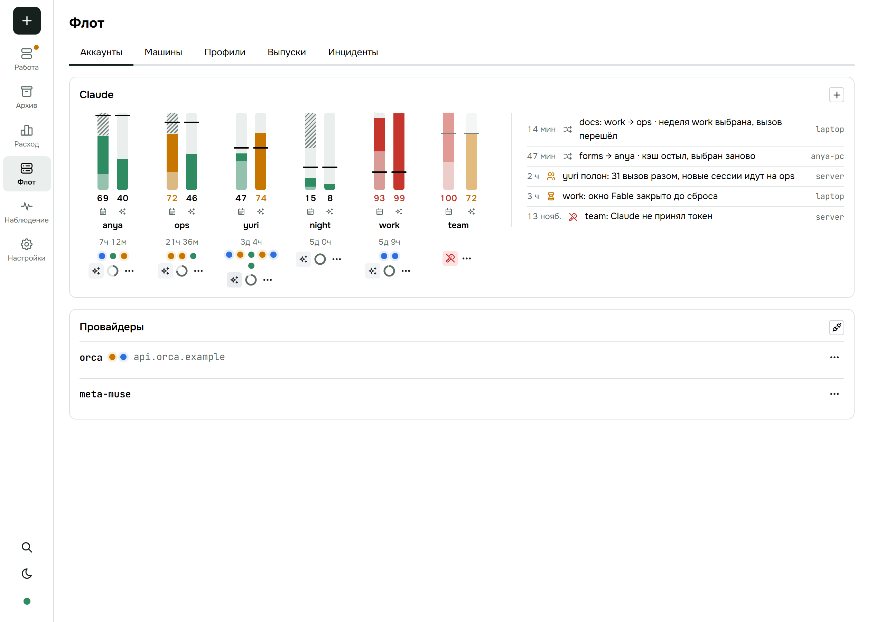<figcaption>Флаг запаса снят у одного аккаунта — штриха на его неделе нет</figcaption></figure>
    <figure class="ph">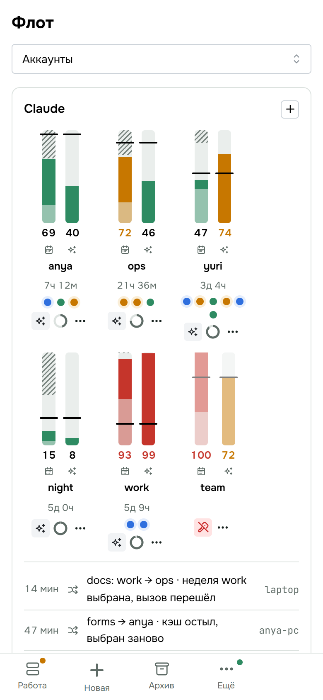<figcaption>Телефон</figcaption></figure>
    <figure class="top">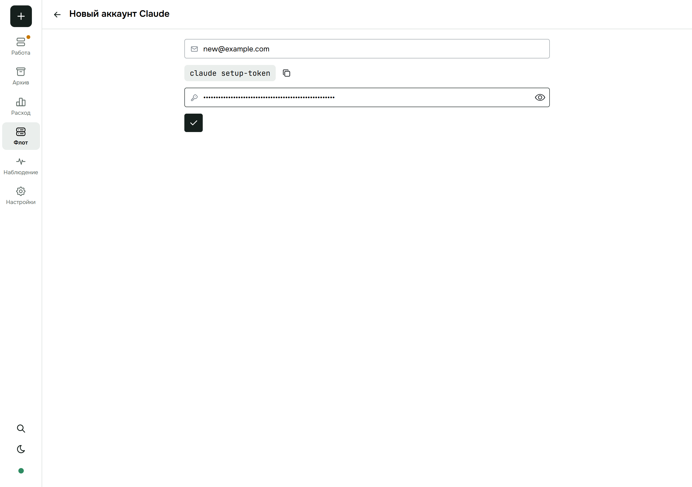<figcaption>Новый аккаунт: почта, команда, токен</figcaption></figure>
  </div>
</section>

<section id="b-limits" data-block>
  <h2><span class="chg" data-chg="limits-h">Все лимиты: что отвечает Claude и что делает прокси</span></h2>
  <div class="card dia">
    <svg viewBox="0 0 960 420" role="img" aria-label="Семь ответов Claude и действие прокси на каждый: неделя, окно Fable, пять часов, аккаунт полон, короткая пауза, перегрузка, токен не принят. В пяти случаях сессия ничего не замечает.">
      <text x="20" y="24" class="t">ответил Claude</text><text x="350" y="24" class="t">делает прокси</text><text x="760" y="24" class="t">видит сессия</text>
      <g class="n" data-i="l-week"><rect x="20" y="36" width="300" height="44" rx="9"/><text x="34" y="56">Неделя выбрана</text><text x="34" y="72" class="s">7d · отказ до сброса</text><rect x="350" y="36" width="380" height="44" rx="9"/><text x="364" y="56">Окно закрыто до сброса</text><text x="364" y="72" class="s">тот же вызов — на следующий аккаунт</text><rect x="760" y="36" width="180" height="44" rx="9"/><text x="774" y="63">ничего</text></g>
      <g class="n" data-i="l-fable"><rect x="20" y="88" width="300" height="44" rx="9"/><text x="34" y="108">Окно Fable выбрано</text><text x="34" y="124" class="s">7d_oi · неделя ещё есть</text><rect x="350" y="88" width="380" height="44" rx="9"/><text x="364" y="108">Аккаунт закрыт только для Fable</text><text x="364" y="124" class="s">остальные модели идут на нём дальше</text><rect x="760" y="88" width="180" height="44" rx="9"/><text x="774" y="115">ничего</text></g>
      <g class="n" data-i="l-five"><rect x="20" y="140" width="300" height="44" rx="9"/><text x="34" y="160">Пять часов выбраны</text><text x="34" y="176" class="s">5h · у аккаунтов прода окна нет</text><rect x="350" y="140" width="380" height="44" rx="9"/><text x="364" y="160">Окно закрыто до сброса</text><text x="364" y="176" class="s">то же, что неделя</text><rect x="760" y="140" width="180" height="44" rx="9"/><text x="774" y="167">ничего</text></g>
      <g class="n new" data-i="l-conc"><rect x="20" y="192" width="300" height="44" rx="9"/><text x="34" y="212">Аккаунт полон</text><text x="34" y="228" class="s">concurrents · без срока</text><rect x="350" y="192" width="380" height="44" rx="9"/><text x="364" y="212">Вызов — на следующий аккаунт</text><text x="364" y="228" class="s">новые сессии сюда не идут, пока вызовов не станет меньше</text><rect x="760" y="192" width="180" height="44" rx="9"/><text x="774" y="219">ничего</text></g>
      <g class="n" data-i="l-throttle"><rect x="20" y="244" width="300" height="44" rx="9"/><text x="34" y="264">Короткая пауза</text><text x="34" y="280" class="s">429 без окон · назван срок</text><rect x="350" y="244" width="380" height="44" rx="9"/><text x="364" y="264">Ждёт названный срок и повторяет там же</text><text x="364" y="280" class="s">не дольше минуты; дольше — на следующий аккаунт</text><rect x="760" y="244" width="180" height="44" rx="9"/><text x="774" y="271">паузу до минуты</text></g>
      <g class="n" data-i="l-over"><rect x="20" y="296" width="300" height="44" rx="9"/><text x="34" y="316">Claude перегружен</text><text x="34" y="332" class="s">529 · не про аккаунт</text><rect x="350" y="296" width="380" height="44" rx="9"/><text x="364" y="316">Ответ идёт сессии как есть</text><text x="364" y="332" class="s">Claude Code повторяет сам</text><rect x="760" y="296" width="180" height="44" rx="9"/><text x="774" y="323">повтор шага</text></g>
      <g class="n bad" data-i="l-token"><rect x="20" y="348" width="300" height="44" rx="9"/><text x="34" y="368">Токен не принят</text><text x="34" y="384" class="s">401</text><rect x="350" y="348" width="380" height="44" rx="9"/><text x="364" y="368">Аккаунт выбыл с причиной</text><text x="364" y="384" class="s">вызов — на следующий аккаунт; происшествие</text><rect x="760" y="348" width="180" height="44" rx="9"/><text x="774" y="375">ничего</text></g>
    </svg>
  </div>
  <div class="say" aria-live="polite"><b>Отказ лимита сессии не достаётся.</b> Claude отказывает до первого слова ответа, поэтому прокси шлёт тот же вызов на другой аккаунт. Только когда годных аккаунтов нет, отказ уходит сессии, и она ждёт сброса.</div>
  <div class="card dia">
    <svg viewBox="0 0 960 250" role="img" aria-label="Жизнь привязки: новая или остывшая сессия выбирает аккаунт; привязанная держится, пока кэш тёплый; час без вызовов — остыла и выбирает заново; лимит — тот же вызов сразу на другом аккаунте.">
      <g class="n" data-i="b-cold"><rect x="20" y="96" width="200" height="60" rx="10"/><text x="120" y="122" text-anchor="middle">Новая или остывшая</text><text x="120" y="140" text-anchor="middle" class="s">кэша нет</text></g>
      <g class="n own" data-i="b-hot"><rect x="430" y="96" width="220" height="60" rx="10"/><text x="540" y="122" text-anchor="middle">Привязана</text><text x="540" y="140" text-anchor="middle" class="s">кэш тёплый · субагенты там же</text></g>
      <g class="n new" data-i="b-moved"><rect x="740" y="96" width="200" height="60" rx="10"/><text x="840" y="122" text-anchor="middle">На другом аккаунте</text><text x="840" y="140" text-anchor="middle" class="s">кэш пишется заново</text></g>
      <g class="a new" data-i="b-pick"><path d="M220 112 L428 112" marker-end="url(#ahn)"/><text x="324" y="102" text-anchor="middle" class="s">годный · лучший счёт</text></g>
      <g class="a new" data-i="b-cool"><path d="M430 142 L222 142" marker-end="url(#ahn)"/><text x="326" y="160" text-anchor="middle" class="s">час без вызовов</text></g>
      <g class="a new" data-i="b-refuse"><path d="M650 126 L738 126" marker-end="url(#ahn)"/><text x="694" y="116" text-anchor="middle" class="s">лимит</text></g>
      <g class="a" data-i="b-back"><path d="M840 96 C840 30 540 30 540 94" marker-end="url(#ah)"/><text x="690" y="38" text-anchor="middle" class="s">первый ответ — снова привязана</text></g>
      <text x="20" y="226" class="s">Сессию двигают только лимиты. Остывшей сессии всё равно, где начинать, — она выбирает аккаунт заново и так выравнивает нагрузку.</text>
    </svg>
  </div>
  <div class="grid">
    <div class="card tile"><b>99 отказов · 88 с</b><span>«аккаунт полон» на проде: 57 процессов сессий на одном аккаунте, 22 хода оборваны</span><small>журнал hz-ex44-1, 15 нояб. 12:46 UTC</small></div>
    <div class="card tile"><b>16 сессий</b><span>на одном аккаунте работают час без единого отказа</span><small>тот же журнал, после разноса по аккаунтам</small></div>
    <div class="card tile"><b>0 из 4</b><span>аккаунтов прода с пятичасовым окном; платные кредиты выключены у всех</span><small>заголовки ответа, 15 нояб.</small></div>
    <div class="card tile"><b>55 смен</b><span>аккаунта у живых сессий за 4 дня — разговор продолжается на новом аккаунте</span><small>журнал флота, 11–15 нояб.</small></div>
  </div>
</section>

<section id="b-cache" data-block>
  <h2>Час кэша и автосжатие</h2>
  <div class="card dia">
    <svg viewBox="0 0 960 240" role="img" aria-label="Шкала часа кэша для трёх случаев: ответ и пауза; разговор от 200 тысяч токенов сжимается на 54-й минуте; лимит посреди хода переводит на другой аккаунт сразу.">
      <g class="tick"><line x1="200" y1="30" x2="200" y2="210"/><line x1="380" y1="30" x2="380" y2="210"/><line x1="560" y1="30" x2="560" y2="210"/><line x1="740" y1="30" x2="740" y2="210"/><line x1="848" y1="30" x2="848" y2="210"/><line x1="920" y1="30" x2="920" y2="210"/></g>
      <text x="200" y="22" text-anchor="middle" class="s">ответ</text><text x="380" y="22" text-anchor="middle" class="s">15</text><text x="560" y="22" text-anchor="middle" class="s">30</text><text x="740" y="22" text-anchor="middle" class="s">45</text><text x="848" y="22" text-anchor="middle" class="s">54</text><text x="920" y="22" text-anchor="middle" class="s">60 мин</text>
      <g data-i="k-1"><text x="20" y="62">Пауза и возврат</text><rect class="warm" x="200" y="46" width="720" height="22" rx="6"/><circle class="dot" cx="656" cy="57" r="5"/><text x="668" y="62" class="s">возврат читает кэш</text></g>
      <g data-i="k-2"><text x="20" y="122">От 200 К, простой</text><rect class="warm" x="200" y="106" width="648" height="22" rx="6"/><circle class="dot new" cx="848" cy="117" r="6"/><rect class="warm b" x="856" y="106" width="64" height="22" rx="6"/><text x="700" y="100" class="s">/compact на 54-й минуте</text></g>
      <g data-i="k-4"><text x="20" y="182">Лимит посреди хода</text><rect class="warm" x="200" y="166" width="180" height="22" rx="6"/><circle class="dot new" cx="380" cy="177" r="6"/><rect class="warm b" x="390" y="166" width="530" height="22" rx="6"/><text x="396" y="160" class="s">сразу другой аккаунт: разговор пишется в кэш заново</text></g>
      <text x="200" y="230" class="s">зелёное — кэш тёплый на прежнем аккаунте · оранжевое — на новом или после сжатия</text>
    </svg>
  </div>
  <div class="say" aria-live="polite"><b>Кэш живёт у аккаунта.</b> Сменился аккаунт — разговор пишется в кэш заново. Поэтому сессию двигает только лимит, а разговор от 200 К машина сжимает сама, пока кэш тёплый.</div>
  <div class="strip">
    <figure class="scroll">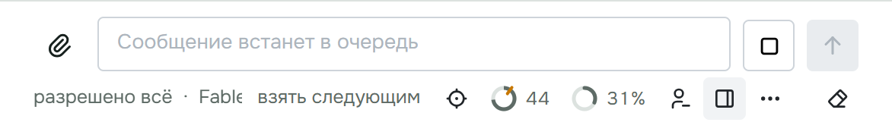<figcaption>Часы кэша в ряду сессии: дуга и число — минуты тёплого кэша; засечка — где разговор сожмётся сам</figcaption></figure>
    <figure class="scroll">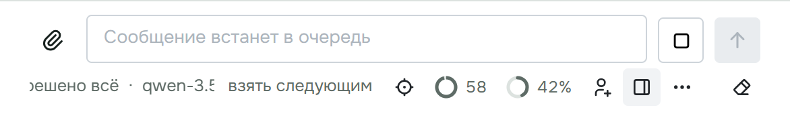<figcaption>Аккаунт или провайдер сменился — часы пустые до следующего ответа. Аккаунта и его лимитов в разговоре нет</figcaption></figure>
  </div>
  <div class="shots">
    <figure class="ph">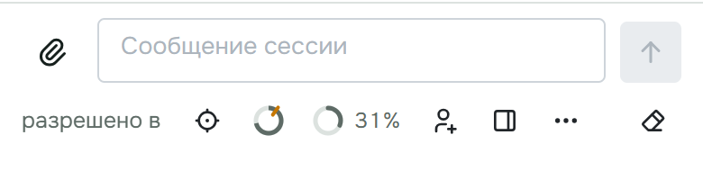<figcaption>Телефон: те же значения в кратком виде</figcaption></figure>
  </div>
</section>

<section id="b-models" data-block>
  <h2>Провайдер и модель — одним выбором</h2>
  <div class="card dia">
    <svg viewBox="0 0 960 190" role="img" aria-label="Каталог Claude и каталог провайдера сходятся в один список с поиском, группами и закрепами; открыть его можно и командой /model; выбор записывает в документ сессии провайдера и точную модель.">
      <g class="n new" data-i="p-claude"><rect x="20" y="12" width="220" height="48" rx="10"/><text x="130" y="33" text-anchor="middle">Каталог Claude</text><text x="130" y="50" text-anchor="middle" class="s">все модели API</text></g>
      <g class="n new" data-i="p-cat"><rect x="20" y="72" width="220" height="48" rx="10"/><text x="130" y="93" text-anchor="middle">Каталог провайдера</text><text x="130" y="110" text-anchor="middle" class="s">один ключ — все модели</text></g>
      <g class="n new" data-i="p-cmd"><rect x="20" y="132" width="220" height="48" rx="10"/><text x="130" y="153" text-anchor="middle">/model</text><text x="130" y="170" text-anchor="middle" class="s">в поле ввода и в сообщении</text></g>
      <g class="n new" data-i="p-list"><rect x="340" y="62" width="240" height="66" rx="10"/><text x="460" y="88" text-anchor="middle">Один список</text><text x="460" y="106" text-anchor="middle" class="s">поиск · группы · закреплённые сверху</text></g>
      <g class="n new" data-i="p-doc"><rect x="690" y="62" width="250" height="66" rx="10"/><text x="815" y="88" text-anchor="middle">Документ сессии</text><text x="815" y="106" text-anchor="middle" class="s">провайдер + точная модель</text></g>
      <g class="a new" data-i="p-a1"><path d="M240 40 L338 80" marker-end="url(#ahn)"/></g>
      <g class="a new" data-i="p-a2"><path d="M240 96 L338 96" marker-end="url(#ahn)"/></g>
      <g class="a new" data-i="p-a4"><path d="M240 152 L338 112" marker-end="url(#ahn)"/><text x="300" y="150" class="s">слова поиска</text></g>
      <g class="a new" data-i="p-a3"><path d="M580 95 L688 95" marker-end="url(#ahn)"/><text x="634" y="86" text-anchor="middle" class="s">один запрос</text></g>
    </svg>
  </div>
  <div class="say" aria-live="polite"><b>Ключ — это провайдер.</b> Один ключ OrcaRouter открывает весь его каталог; модель выбирается в сессии. У ключа больше нет модели по умолчанию, соответствия имён и окна контекста.</div>
  <div class="grid">
    <div class="card tile"><b>4 → 15</b><span>моделей Claude в выборе: все, что отдаёт API по токену аккаунта</span><small>опыт: GET /v1/models, 15 моделей с семейством и окном</small></div>
    <div class="card tile"><b>1 → 0</b><span>своих списков моделей в коде</span></div>
    <div class="card tile"><b>2 → 1</b><span>путь смены модели: «/model» и список правят один документ</span></div>
  </div>
  <div class="shots">
    <figure class="crop">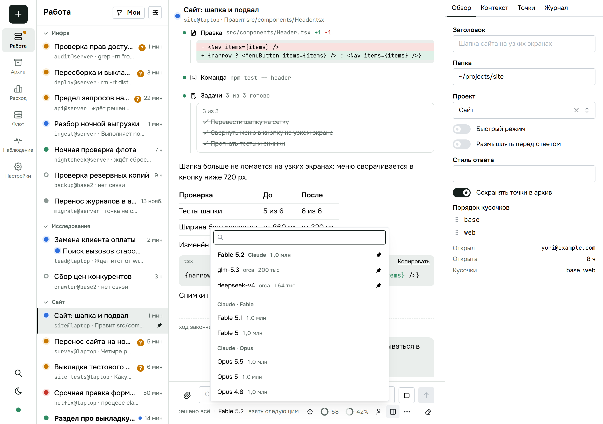<figcaption>Закреплённые сверху; дальше группы — провайдер и семейство; у модели — окно контекста</figcaption></figure>
    <figure class="crop">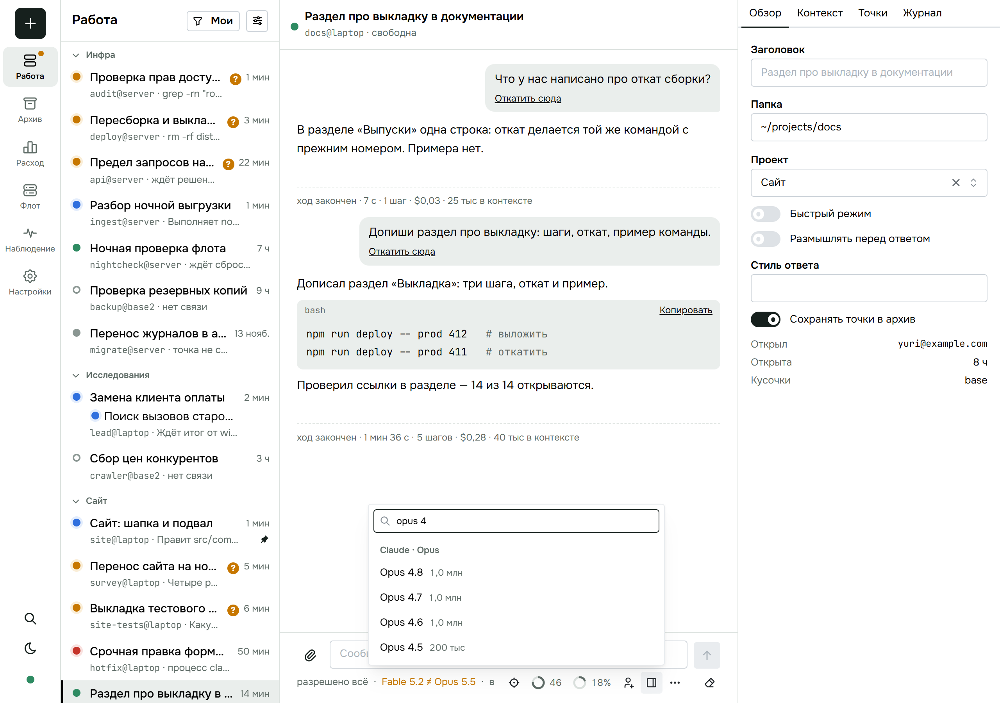<figcaption>«/model opus 4» в поле ввода — тот же список с этим поиском</figcaption></figure>
    <figure class="crop">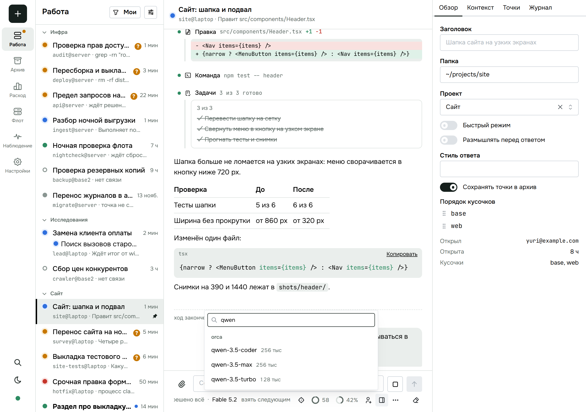<figcaption>Поиск по имени, провайдеру и семейству</figcaption></figure>
    <figure class="top">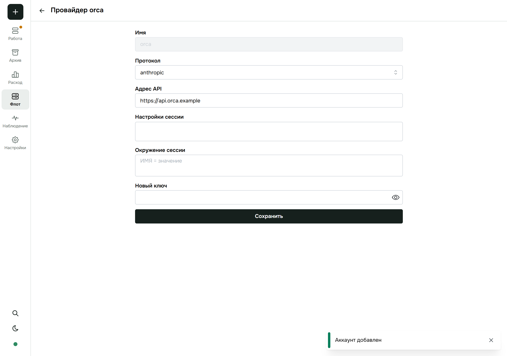<figcaption>Провайдер: имя, протокол, адрес, ключ</figcaption></figure>  </div>
  <div class="strip">
    <figure class="scroll"><figcaption>Сессия на провайдере: модель и провайдер в одном значении; выбора аккаунта нет</figcaption></figure>
  </div>
</section>

<section id="b-truth" data-block>
  <h2>Отвечает та модель, что выбрана</h2>
  <div class="card dia">
    <svg viewBox="0 0 960 150" role="img" aria-label="Выбор модели проверяется по списку провайдера; машина ставит модель процессу сессии; каждый ответ называет модель; ядро сверяет её с документом; расхождение видно в ряду сессии и в журнале.">
      <g class="n new" data-i="t-pick"><rect x="20" y="40" width="170" height="58" rx="10"/><text x="105" y="65" text-anchor="middle">Выбор</text><text x="105" y="83" text-anchor="middle" class="s">нет в списке — отказ</text></g>
      <g class="n" data-i="t-set"><rect x="250" y="40" width="170" height="58" rx="10"/><text x="335" y="65" text-anchor="middle">Процесс сессии</text><text x="335" y="83" text-anchor="middle" class="s">точное имя, без псевдонимов</text></g>
      <g class="n new" data-i="t-answer"><rect x="480" y="40" width="170" height="58" rx="10"/><text x="565" y="65" text-anchor="middle">Ответ</text><text x="565" y="83" text-anchor="middle" class="s">называет свою модель</text></g>
      <g class="n new" data-i="t-check"><rect x="710" y="40" width="230" height="58" rx="10"/><text x="825" y="65" text-anchor="middle">Сверка в ядре машины</text><text x="825" y="83" text-anchor="middle" class="s">не та — ряд, журнал, происшествие</text></g>
      <g class="a new" data-i="t-a1"><path d="M190 69 L248 69" marker-end="url(#ahn)"/></g><g class="a new" data-i="t-a2"><path d="M420 69 L478 69" marker-end="url(#ahn)"/></g><g class="a new" data-i="t-a3"><path d="M650 69 L708 69" marker-end="url(#ahn)"/></g>
      <text x="20" y="130" class="s">Модели «по умолчанию» нет: у каждой сессии в документе стоит точное имя.</text>
    </svg>
  </div>
  <div class="say" aria-live="polite"><b>Один список — одна правда.</b> Список моделей больше не спрашивают у процесса каждой сессии и не держат отдельно на странице: он один у провайдера, и выбор по нему проверяет машина.</div>
  <div class="strip">
    <figure class="scroll">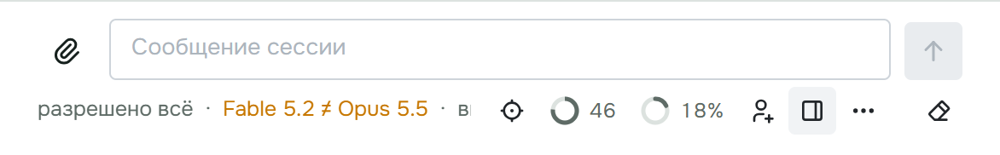<figcaption>Выбрана Fable, ответил Opus — обе модели видны сразу, цветом</figcaption></figure>
  </div>
</section>

<section id="b-where" data-block>
  <h2><span class="chg" data-chg="where-h">Вся история — в ClickHouse</span></h2>
  <div class="card dia">
    <svg viewBox="0 0 960 310" role="img" aria-label="Прокси и аккаунты на машине пишут строку журнала о каждом вызове, решении и событии. Журнал машины пачками уходит через службу приёма в ClickHouse, где лежит вся история. Экран и агенты читают её оттуда. Токены и цена вызовов по-прежнему приходят из архива точек и сходятся с журналом по номеру запроса.">
      <text x="20" y="24" class="t">машина</text><text x="290" y="24" class="t">службы Cloudflare</text><text x="530" y="24" class="t">ClickHouse</text><text x="780" y="24" class="t">читают</text>
      <g class="n new" data-i="w-proxy"><rect x="20" y="40" width="220" height="56" rx="10"/><text x="130" y="64" text-anchor="middle">Прокси и аккаунты</text><text x="130" y="82" text-anchor="middle" class="s">привязки · окна · «полон»</text></g>
      <g class="n new" data-i="w-journal"><rect x="20" y="150" width="220" height="62" rx="10"/><text x="130" y="176" text-anchor="middle">Журнал машины</text><text x="130" y="194" text-anchor="middle" class="s">вызов · решение · событие</text></g>
      <g class="n" data-i="w-keys"><rect x="290" y="40" width="190" height="50" rx="10"/><text x="385" y="62" text-anchor="middle">Ключи</text><text x="385" y="79" text-anchor="middle" class="s">токены · флаг запаса</text></g>
      <g class="n new" data-i="w-ship"><rect x="290" y="156" width="190" height="50" rx="10"/><text x="385" y="178" text-anchor="middle">Приём журнала</text><text x="385" y="195" text-anchor="middle" class="s chg" data-chg="where-ship">аналитика · без очереди</text></g>
      <g class="n" data-i="w-arch"><rect x="290" y="240" width="190" height="50" rx="10"/><text x="385" y="262" text-anchor="middle">Архив точек</text><text x="385" y="279" text-anchor="middle" class="s">разговоры</text></g>
      <g class="n new" data-i="w-log"><rect x="530" y="150" width="200" height="62" rx="10"/><text x="630" y="176" text-anchor="middle">Журнал флота целиком</text><text x="630" y="194" text-anchor="middle" class="s">вся история · поиск</text></g>
      <g class="n" data-i="w-calls"><rect x="530" y="240" width="200" height="50" rx="10"/><text x="630" y="262" text-anchor="middle">Вызовы</text><text x="630" y="279" text-anchor="middle" class="s">токены и цена</text></g>
      <g class="n new" data-i="w-page"><rect x="780" y="150" width="160" height="62" rx="10"/><text x="860" y="176" text-anchor="middle">Экран и агенты</text><text x="860" y="194" text-anchor="middle" class="s">лента · история · разбор</text></g>
      <g class="a" data-i="w-a-key"><path d="M290 65 L242 65" marker-end="url(#ah)"/></g>
      <g class="a new" data-i="w-a-write"><path d="M130 96 L130 148" marker-end="url(#ahn)"/><text x="140" y="128" class="s">строка на каждое действие</text></g>
      <g class="a new" data-i="w-a-batch"><path d="M240 181 L288 181" marker-end="url(#ahn)"/></g>
      <g class="a new" data-i="w-a-ins"><path d="M480 181 L528 181" marker-end="url(#ahn)"/></g>
      <g class="a" data-i="w-a-arch"><path d="M480 265 L528 265" marker-end="url(#ah)"/></g>
      <g class="a new wait" data-i="w-a-join"><path d="M630 214 L630 238"/><text x="640" y="231" class="s">номер запроса</text></g>
      <g class="a new" data-i="w-a-read"><path d="M730 181 L778 181" marker-end="url(#ahn)"/></g>
      <text x="20" y="306" class="s">Файл журнала на машине — источник. ClickHouse недоступен — работа идёт, отправка продолжится с места остановки.</text>
    </svg>
  </div>
  <div class="say" aria-live="polite"><b>Наблюдаемость первой.</b> Каждый вызов модели, каждое решение прокси и каждое событие аккаунта — строка журнала машины, и журнал целиком уходит в ClickHouse. Там вся история; экран и агенты читают её оттуда.</div>
  <div class="grid">
    <div class="card tile"><b>почему этот аккаунт</b><span>решение со счётом каждого кандидата и причиной</span></div>
    <div class="card tile"><b>расход по аккаунтам</b><span>сколько недели каждого аккаунта съела какая сессия и проект</span></div>
    <div class="card tile"><b>цена перехода</b><span>сколько токенов записано в кэш заново после смены аккаунта</span></div>
    <div class="card tile"><b>отказы и скорость недели</b><span>вид отказа, аккаунт, окно после каждого вызова — прогноз, когда кончится</span></div>
  </div>
</section>

<section id="b-etalons" data-block>
  <h2>Эталоны</h2>
  <div class="card">
    <div class="et-g chg" data-chg="et-g-machine">Машина: прокси, аккаунты, ядро, разговор · 28</div>
    <div class="et"><div class="in">Сессия без своего входа, прокси подставил токен<small>чьё: факт опыта</small></div><div class="ar">→</div><div class="out">Ход прошёл; разговор записан в часовой кэш</div></div>
    <div class="et"><div class="in">Два годных аккаунта с равным остатком, сброс недели через 21 ч и через 3 дня; новая сессия<small>чьё: слово пользователя 11 нояб.</small></div><div class="ar">→</div><div class="out">Сессия привязана к аккаунту со сбросом через 21 ч</div></div>
    <div class="et chg" data-chg="et-score"><div class="in">У ближнего по сбросу аккаунта осталось 3 % на 2 часа, у другого — 60 % на 30 часов; новая сессия<small>чьё: слово пользователя 15 нояб. — «выбирать самый подходящий аккаунт»</small></div><div class="ar">→</div><div class="out">Привязана ко второму: счёт 2 % в час против 1,5</div></div>
    <div class="et chg" data-chg="et-spread"><div class="in">Счёт трёх аккаунтов 4 · 2 · 1; разом открыто семь сессий<small>чьё: слово пользователя 15 нояб. — «максимальная параллельность»</small></div><div class="ar">→</div><div class="out">Сессии разошлись 4 · 2 · 1</div></div>
    <div class="et chg" data-chg="et-keep-off"><div class="in">Флаг «беречь Fable» снят; неделя 60 %, окно Fable 20 %; новая сессия Opus<small>чьё: слово пользователя 15 нояб. — «если нет — не сохранять»</small></div><div class="ar">→</div><div class="out">Аккаунт годен, остаток 40 %. С флагом он закрыт: вся свободная неделя — запас</div></div>
    <div class="et chg" data-chg="et-spare"><div class="in">Сессии Opus негде идти без запаса; запас Fable есть у двух аккаунтов<small>чьё: слово пользователя 11 нояб.</small></div><div class="ar">→</div><div class="out">Берёт запас у аккаунта с большим счётом</div></div>
    <div class="et chg" data-chg="et-nochain"><div class="in">Аккаунт добавлен или удалён<small>чьё: слово пользователя 15 нояб. — «не хранить цепочку»</small></div><div class="ar">→</div><div class="out">Следующая новая сессия считает выбор по новому набору; порядка аккаунтов нет ни в настройках, ни в записи машины</div></div>
    <div class="et chg" data-chg="et-fresh"><div class="in">Неделя аккаунта ещё не начата, или машина ещё не видела ни одного его ответа<small>чьё: факт — окно недели 168 часов и открывается первым вызовом; числа аккаунта машина знает только из его ответов</small></div><div class="ar">→</div><div class="out">Счёт считается от полного остатка и 168 часов до сброса</div></div>
    <div class="et chg" data-chg="et-callline"><div class="in">Claude отказал в вызове, второй аккаунт ответил<small>чьё: слово пользователя 15 нояб. — «вся история и весь лог в ClickHouse»</small></div><div class="ar">→</div><div class="out">В журнале машины три строки: отказанный вызов с видом и аккаунтом, решение со счётом кандидатов, ответивший вызов с числом переходов 1; все три — в ClickHouse</div></div>
    <div class="et"><div class="in">Аккаунт сессии годен, кэш тёплый, у другого сброс стал ближе<small>чьё: слово пользователя 15 нояб. — «менять только в случае лимитов, пока кэш горячий»</small></div><div class="ar">→</div><div class="out">Привязка та же</div></div>
    <div class="et chg" data-chg="et-cold"><div class="in">Сессия молчала час, кэш остыл; у другого годного аккаунта сброс ближе<small>чьё: слово пользователя 15 нояб. — «перезапуск холодного на любом»</small></div><div class="ar">→</div><div class="out">Следующий вызов привязывает её к аккаунту с ближним сбросом</div></div>
    <div class="et chg" data-chg="et-conc"><div class="in">Claude ответил «аккаунт полон» новой сессии<small>чьё: факт прода — 99 отказов, 22 оборванных хода</small></div><div class="ar">→</div><div class="out">Тот же вызов ушёл на следующий аккаунт, сессия привязана к нему; ход не оборван</div></div>
    <div class="et chg" data-chg="et-conc-hot"><div class="in">Claude ответил «аккаунт полон» сессии с тёплым кэшем<small>чьё: слово пользователя 15 нояб. — «симлесс для клиента»</small></div><div class="ar">→</div><div class="out">Этот вызов ушёл на следующий аккаунт; привязка прежняя</div></div>
    <div class="et chg" data-chg="et-conc-skip"><div class="in">Аккаунт полон; открыта новая сессия<small>чьё: слово пользователя 15 нояб. — «правильно балансить»</small></div><div class="ar">→</div><div class="out">Привязана к следующему годному аккаунту, а не к полному</div></div>
    <div class="et chg" data-chg="et-sub"><div class="in">Сессия запустила трёх субагентов<small>чьё: слово пользователя 15 нояб. — «сессия или агент стики»</small></div><div class="ar">→</div><div class="out">Их вызовы идут на аккаунте сессии</div></div>
    <div class="et chg" data-chg="et-fable-only"><div class="in">Отказ по окну Fable; на аккаунте идёт сессия Opus<small>чьё: факт — заголовки отказа</small></div><div class="ar">→</div><div class="out">Сессия Fable ушла на другой аккаунт; сессия Opus осталась</div></div>
    <div class="et chg" data-chg="et-throttle"><div class="in">Отказ без окна, срок 20 секунд<small>чьё: слово пользователя 15 нояб. — «авторековериться»</small></div><div class="ar">→</div><div class="out">Через 20 секунд тот же вызов прошёл на том же аккаунте</div></div>
    <div class="et"><div class="in"><span class="chg" data-chg="et-restart-in">Машину подменили; сессия была привязана к годному аккаунту</span><small>чьё: слово пользователя 11 нояб.</small></div><div class="ar">→</div><div class="out"><span class="chg" data-chg="et-restart-out">Привязка та же — из записи сессии</span></div></div>
    <div class="et"><div class="in">Claude отказал по окну недели посреди хода<small>чьё: слово пользователя 15 нояб. — «всё через прокси»</small></div><div class="ar">→</div><div class="out">Окно закрыто до сброса из заголовка; тот же запрос ушёл на следующий аккаунт; сессия отказа не увидела</div></div>
    <div class="et chg" data-chg="et-full100"><div class="in">Неделя аккаунта дошла до 100 % посреди хода<small>чьё: слово пользователя 15 нояб. — «с автопереносом можно добивать до 100 процентов»</small></div><div class="ar">→</div><div class="out">Следующий вызов ушёл на следующий аккаунт; ход не оборван; до 100 % сессия с аккаунта не уходила</div></div>
    <div class="et"><div class="in">Сессия Fable; у аккаунта окно Fable 100 %<small>чьё: слово пользователя 11 нояб.</small></div><div class="ar">→</div><div class="out">Этот аккаунт не берётся; остальные модели сначала берут свою половину недели</div></div>
    <div class="et"><div class="in">Годных аккаунтов нет<small>чьё: код</small></div><div class="ar">→</div><div class="out">Сессия ждёт сброса; в час сброса продолжает сама</div></div>
    <div class="et"><div class="in">Claude ответил, что токен не годен<small>чьё: факт документации</small></div><div class="ar">→</div><div class="out">Аккаунт выбыл из выбора с причиной; сессии перешли на следующий; происшествие</div></div>
    <div class="et"><div class="in">Выбрана модель провайдера<small>чьё: слово пользователя 15 нояб. — «не создавать слот на каждую»</small></div><div class="ar">→</div><div class="out">В документе сессии провайдер и точная модель; вызов ушёл провайдеру с его ключом</div></div>
    <div class="et"><div class="in">Модель, которой нет в списке провайдера<small>чьё: слово пользователя 15 нояб. — «не могу выбрать нужную»</small></div><div class="ar">→</div><div class="out">Отказ словом: такой модели у провайдера нет; документ не изменился</div></div>
    <div class="et"><div class="in">Ответ пришёл от другой модели<small>чьё: слово пользователя 15 нояб. — «убрать любой десинк»</small></div><div class="ar">→</div><div class="out">В строке сессии обе модели; строка журнала; происшествие</div></div>
    <div class="et chg" data-chg="et-model-cmd"><div class="in">Сообщение «/model opus 4.8» из другой сессии<small>чьё: слово пользователя 15 нояб. — «/model должно правильно отрабатываться»</small></div><div class="ar">→</div><div class="out">В документе сессии claude-opus-4-8; в разговор команда не ушла; отправителю — строка с моделью</div></div>
    <div class="et chg" data-chg="et-model-many"><div class="in">Сообщение «/model opus» — подходят шесть моделей<small>чьё: слово пользователя 15 нояб. — «выбранная не точно работает»</small></div><div class="ar">→</div><div class="out">Модель не меняется; отправителю — список подходящих</div></div>
    <div class="et-g chg" data-chg="et-g-journal">Журнал → ClickHouse · 4</div>
    <div class="et chg" data-chg="et-log-down"><div class="in">ClickHouse недоступен час; сессии работают<small>чьё: слово пользователя 15 нояб. — «observability first»; устав — часть падает одна</small></div><div class="ar">→</div><div class="out">Вызовы модели идут; после возврата отправка продолжилась с места остановки, потерянных строк 0</div></div>
    <div class="et chg" data-chg="et-log-twice"><div class="in">Одна и та же пачка строк отправлена дважды<small>чьё: код — так устроена аналитика точек</small></div><div class="ar">→</div><div class="out">Строк в ClickHouse столько же</div></div>
    <div class="et chg" data-chg="et-log-read"><div class="in">В ClickHouse строки вызовов, решений и событий двух аккаунтов; чтение с отбором «account.» и одним аккаунтом<small>чьё: слово пользователя 15 нояб. — «вся история и весь лог в ClickHouse»</small></div><div class="ar">→</div><div class="out">Только решения и события этого аккаунта, новые первыми</div></div>
    <div class="et chg" data-chg="et-log-stop"><div class="in">Машину остановили посреди отправки пачки<small>чьё: слово пользователя 2 нояб. — «у всех операций лимит и graceful shutdown»</small></div><div class="ar">→</div><div class="out">Запрос оборван; новая машина отправила с того же места; строк в ClickHouse столько же, сколько в файле</div></div>
    <div class="et-g chg" data-chg="et-g-cache">Час кэша · 2 · автосжатие — ещё 7, в своём дизайне</div>
    <div class="et chg" data-chg="et-cache-hour"><div class="in">Ответ записал разговор в часовой кэш; разговор 120 К<small>чьё: слово пользователя 15 нояб. — «время кэша сессии с учётом смены аккаунта»; факт опыта — кэш часовой</small></div><div class="ar">→</div><div class="out">В строке сессии час кэша — час от этого ответа, на каком бы аккаунте он ни пришёл; часа сжатия нет</div></div>
    <div class="et chg" data-chg="et-cache-compact"><div class="in">То же, разговор 212 К<small>чьё: слово пользователя 11 нояб. — 54-я минута, от 200 К</small></div><div class="ar">→</div><div class="out">В строке ещё и час сжатия — 54-я минута после ответа</div></div>
    <div class="et-g chg" data-chg="et-g-keys">Служба ключей · 2</div>
    <div class="et chg" data-chg="et-catalog"><div class="in">Каталог Claude по токену аккаунта<small>чьё: слово пользователя 15 нояб. — «все доступные в API модели»; факт опыта</small></div><div class="ar">→</div><div class="out">Все модели API с семейством и окном — в опыте 15; в списке они по группам семейств</div></div>
    <div class="et chg" data-chg="et-cat-live"><div class="in">Провайдер убрал модель из своего каталога<small>чьё: слово пользователя 15 нояб. — «убрать любой десинк»</small></div><div class="ar">→</div><div class="out">Следующий запрос списка её не показывает: копии каталога у службы нет</div></div>
    <div class="et-g chg" data-chg="et-g-page">Страница · 4</div>
    <div class="et chg" data-chg="et-noacct"><div class="in">Разговор сессии на Claude открыт на экране<small>чьё: слово пользователя 15 нояб. — «знать лимиты аккаунта не нужно»</small></div><div class="ar">→</div><div class="out">Ни аккаунта, ни его лимитов в ряду под полем ввода и в панели сессии</div></div>
    <div class="et chg" data-chg="et-feed"><div class="in">Сессия перешла на другой аккаунт; открыт экран аккаунтов<small>чьё: слово пользователя 15 нояб.</small></div><div class="ar">→</div><div class="out">В ленте переходов строка с причиной и аккаунтами — прочитана из ClickHouse</div></div>
    <div class="et"><div class="in">Новая сессия, ряд под полем ввода, остановленная сессия<small>чьё: слово пользователя 15 нояб. — «список плавает»</small></div><div class="ar">→</div><div class="out">Список моделей один и тот же</div></div>
    <div class="et"><div class="in">Модель закреплена на телефоне<small>чьё: слово пользователя 15 нояб. — «с закрепов»</small></div><div class="ar">→</div><div class="out">Стоит сверху списка и на другом устройстве этого человека</div></div>
  </div>
</section>

<section id="b-forks" data-block>
  <h2><span class="chg" data-chg="forks-closed">Развилки закрыты замерами прода</span></h2>
  <div class="grid">
    <div class="card tile"><b>78 = 78 · 58 ≈ 57</b><span>infi…: неделя и Fable — страница Claude против заголовков ответа</span></div>
    <div class="card tile"><b>77 = 77 · 93 ≈ 92</b><span>yuri…: то же</span></div>
    <div class="card tile"><b>19 = 19 · 14 = 14</b><span>mypo…: то же</span></div>
    <div class="card tile"><b>22 = 22 · 0 = 0</b><span>fooo…: то же</span></div>
  </div>
  <div class="card">
    <div class="et"><div class="in">Число Fable: окно из ответа Claude или полный вход на машине-хабе<small>замер: 4 аккаунта прода, запросы Haiku и Fable через черновой прокси</small></div><div class="ar">→</div><div class="out">Закрыта: неделя совпала у 4 из 4, Fable расходится не больше чем на 1 п. п. Числа и правило выбора работают на заголовках; хаб не нужен</div></div>
    <div class="et"><div class="in">Remote Control и строка устава о входе<small>замер: картина прода</small></div><div class="ar">→</div><div class="out">Закрыта: Remote Control включён у 0 из 53 сессий. Он уходит вместе с входами; строка устава меняется при «делай»</div></div>
  </div>
  <div class="say"><b>Риск.</b> Тео предупреждает о своём способе: «может кончиться блокировкой». Годовой токен — документированный способ работы без человека. <span class="chg" data-chg="risk-machines">Токен аккаунта теперь получает любая машина флота — как если бы аккаунт вошёл на каждой; на проде так уже есть: каждый аккаунт вошёл на 5–9 машинах.</span></div>
</section>

<section id="b-gate" data-block>
  <h2>Гейт</h2>
  <div class="card gate"><span class="chg" data-chg="gate-line">Гейт (63 строки реестров): дубликаты ответственности 4 → 0 · состояния 5 → 0 · логики 5 → 0 · смысла 4 → 0 · других 3 → 0 · лишние коммуникации 9 → 0 · циклы 0 → 0</span>
<span class="chg" data-chg="gate-nums">Числа: запросы договора −5 +3 (каталог, запись пачки журнала, чтение журнала) · проход к процессу сессии −2 · типы договора −4 · поля ключа −3 +1 · поля строки сессии +2 (час кэша с часом сжатия, ответившая модель) −2 (Remote Control) · ключи документа −1 · модули машины 9 → 8 · файлы модуля аккаунтов машины 4 → 2 · папки входов и ссылки мест на диске машин → 0 · процессы-пробы claude по расписанию 3 → 0 · источники списка моделей 3 → 1 · свой список моделей в коде 1 → 0 · моделей Claude в выборе 4 → 15 · пути смены модели 2 → 1 · каналы +1 (журнал машины → ClickHouse) · очереди 0 новых · таблицы ClickHouse +1 · секреты и настройки 0 новых · ожидаемые ветки сбоев +2 (отказ лимита → другой аккаунт, короткая пауза → повтор) · эталоны 40 и 7 из дизайна автосжатия</span>
Работа: большая — меняет договор (документ сессии, ключи, аккаунты), хранение секретов аккаунта<span class="chg" data-chg="gate-work">, поток вызова модели и путь журнала машины в ClickHouse</span>
Сделано:
  1. Платформа раньше своего · вход аккаунта · годовой токен Claude вместо папки входа с обновлением · выигрыш: обновлений токена → 0, входов в год 384 → 4
  2. Юнификация · аккаунт Claude — ещё один ключ флота; токен подставляет тот же прокси, что ставит ключи провайдеров · выигрыш: способов дать сессии секрет 2 → 1
  3. Дубликат состояния · вход одного аккаунта лежал на каждой машине · одно место на флот · выигрыш: копий N×M → 1
  4. Дубликат смысла · «slot» значил и очередь, и ключ · в документе сессии — провайдер и модель · выигрыш: 2 смысла → 1
  5. Лишние коммуникации · опрос лимитов, проверка входа и проверка владельца отдельными процессами claude каждые 2 минуты; список моделей у каждой сессии · лимиты приходят в заголовках ответа, вход проверять нечем, список — у провайдера · выигрыш: 4 потока → 0
  6. Дубликат логики и состояния · список моделей: свой у страницы, свой у процесса сессии, свой у ключа · один у провайдера · выигрыш: 3 → 1
  7. Дубликат смысла · модель — псевдоним или точное имя; «по умолчанию» · только точное имя · выигрыш: 3 записи одного → 1
  8. Дубликат ответственности · «какая модель активна» решали страница и процесс · документ задаёт, ядро сверяет · выигрыш: 2 → 1
  9. Less is More · ключ на каждую модель с соответствием имён и окном · один ключ провайдера и каталог · выигрыш: полей ключа −3
  10. Другой дубликат · отказ Claude обрывал ход, а потом сессия продолжала отдельным вводом · прокси шлёт тот же запрос на следующий аккаунт · выигрыш: 2 шага → 1
<span class="chg" data-chg="gate-11">  11. Дубликат ответственности · сверку модели вели и прокси, и ядро · только ядро: у него документ и каждый ответ сессии; прокси тела ответа не читает · выигрыш: 2 → 1</span>
<span class="chg" data-chg="gate-12">  12. Дубликат логики · порог 200 К с 54-й минутой и сравнение моделей считала ещё и страница · строка сессии несёт итог: когда сожмётся, какая модель ответила · выигрыш: мест правила 2 → 1, дважды</span>
<span class="chg" data-chg="gate-13">  13. Дубликат состояния · каталог провайдера лежал копией у службы ключей, с кнопкой обновления · служба спрашивает провайдера на каждый запрос · выигрыш: копий 1 → 0, запросов −1, полей ключа −2</span>
<span class="chg" data-chg="gate-14">  14. Лишние коммуникации · модель и расход шли ядру вторым путём через прокси; ключи провайдеров — вторым путём через список аккаунтов машины; запрос обновления каталога · по одному пути · выигрыш: 3 → 0</span>
<span class="chg" data-chg="gate-15">  15. Дубликат смысла · «провайдер» значил и сам ключ, и вид его API · в записи ключа вид API называется протоколом · выигрыш: 2 смысла → 1</span>
<span class="chg" data-chg="gate-16">  16. Платформа раньше своего · список моделей Claude · не свой список в коде, а каталог API по токену аккаунта — тем же запросом, что каталог провайдера · выигрыш: своих списков 1 → 0, моделей в выборе 4 → 15</span>
<span class="chg" data-chg="gate-17">  17. Юнификация · «/model» · не команда внутри Claude, а тот же путь, что выбор в списке: правка документа сессии · выигрыш: путей смены модели 2 → 1</span>
<span class="chg" data-chg="gate-18">  18. Удаление раньше добавления · отказ лимита · обрывал ход и ждал отдельного «Продолжай» (на проде 22 хода за 88 с) · отказ сессии не достаётся: вызов уходит на другой аккаунт · выигрыш: оборванных ходов при отказе → 0</span>
<span class="chg" data-chg="gate-19">  19. Явное · виды отказов · «лимит» был одним понятием; их семь, у каждого свой ответ прокси · выигрыш: неизвестных веток отказа 1 → 0</span>
<span class="chg" data-chg="gate-20">  20. Удаление раньше добавления · порядок аккаунтов (очередь, «кто заведён раньше») · хранимого порядка нет: выбор — чистая функция от чисел аккаунтов и модели сессии · выигрыш: хранимых порядков 1 → 0</span>
<span class="chg" data-chg="gate-21">  21. Явное · запас недели под Fable · был зашит одним правилом для всех аккаунтов · флаг аккаунта · выигрыш: настройка там, где решение, +1 поле ключа</span>
<span class="chg" data-chg="gate-22">  22. Less is More · аккаунт в разговоре · значение с лимитами в ряду, меню «только этот», лимиты в панели сессии · в разговоре аккаунта нет · выигрыш: мест, где человек видит аккаунт, 4 → 1</span>
<span class="chg" data-chg="gate-23">  23. Юнификация · история аккаунтов · смена аккаунта и вход лежали и строками журнала машины, и записями журнала флота · один поток: журнал машины целиком уходит в ClickHouse · выигрыш: мест, где лежит история аккаунтов, 2 → 1; канал +1, запросы +2 (запись пачки, чтение), таблица ClickHouse +1</span>
<span class="chg" data-chg="gate-24">  24. Явное · решение прокси · было видно только по следствию (на каком аккаунте сессия) · строка решения называет всех кандидатов, их счёт и причину · выигрыш: необъяснимых переходов → 0</span>
<span class="chg" data-chg="gate-25">  25. Лишняя устойчивость · порог 98 % и плановая смена аккаунта со сжатием · с бесшовным переходом не нужны: аккаунт работает до 100 %, сессию двигает только лимит · выигрыш: порогов 3 → 0, ветка «сжать перед сменой» → 0, +2 % недели каждого аккаунта</span>
<span class="chg" data-chg="gate-26">  26. Другой дубликат · недоставленный журнал повторяли и место в файле машины, и очередь службы, строки ждали в двух местах · повторяет одно место в файле: служба пишет пачку в ClickHouse сразу и отвечает после записи · выигрыш: очередей 1 → 0, переходов 4 → 3; очередь после третьей попытки бросает пачку — «потерянных строк 0» с ней невыполнимо</span>
<span class="chg" data-chg="gate-27">  27. Дубликат ответственности · привязку, окна и выбор держали и прокси, и модуль аккаунтов; модель ответа в строке вызова писал прокси, который тела ответа не читает · решает модуль аккаунтов, прокси везёт; модель ответа знает только ядро · выигрыш: 2 → 1, дважды</span>
<span class="chg" data-chg="gate-28">  28. Лишние коммуникации · ответ «докуда принято» и имя машины в пачке журнала · место в файле считает одна машина, имя машины — из её пропуска · выигрыш: полей 2 → 0, мест расчёта 2 → 1</span>
<span class="chg" data-chg="gate-29">  29. Дубликат логики · «слова → модели» искали и список на странице, и машина для «/model» из сообщения · одна функция общего договора · выигрыш: мест правила 2 → 1</span>
<span class="chg" data-chg="gate-30">  30. Дубликат смысла · «происшествие» не имело владельца · это обращение в «Инциденты» флота — существующий путь · выигрыш: новых способов позвать человека 1 → 0</span>
<span class="chg" data-chg="gate-31">  31. Тестируемость · порядок · шаг человека стоял первым и держал остальные; строки «Готово» считали эталоны, которых нет на странице, и строку журнала, которую некому писать · шаг человека отдельно, эталоны по шагам 28 · 4 · 2 · 2 · 4, проверка прода может упасть · выигрыш: шагов, ждущих человека, 8 → 1</span>
<span class="chg" data-chg="gate-forks">Развилки: обе закрыты замерами прода 15 нояб. — числа из заголовков совпали со страницей Claude (4 из 4, Fable ≤ 1 п. п.); Remote Control включён у 0 из 53 сессий</span>
Не трогал как редакторское: слово «ключ» в подписях действий экрана провайдеров<span class="chg" data-chg="gate-ed">; «прокси» как имя всей пары «прокси и аккаунты» в заголовках и таблице лимитов</span></div>
</section>

<section id="b-order" data-block>
  <h2>Порядок реализации</h2>
  <ol class="steps">
    <li><div>Живые факты до кода<span class="chg" data-chg="o0-nohuman"> — без человека, через черновой прокси на токене обычного входа</span>. <span class="chg" data-chg="o0-measured">Сверка чисел с страницей Claude уже сделана на проде.</span> <span class="chg" data-chg="o0-facts">Имя модели в ответе против имени в списке — у четырёх моделей Claude и одной модели провайдера.</span></div>
      <div class="done"><b>Готово:</b> <span class="chg" data-chg="o0-done">имена моделей совпали — 5 из 5</span><span class="chg" data-chg="o0-stop">; не совпали — код сверки не пишется, правило сравнения возвращается в дизайн</span>.</div></li>
    <li class="human chg" data-chg="o-human"><div>Годовой токен — единственный шаг за человеком. Вы в своём терминале: <code>claude setup-token</code>, токен — ключом тестового флота. Шаги 1–5 его не ждут: стенд работает на поддельном Claude, для прокси токен — просто строка. Нужен только шагу 6.</div>
      <div class="done"><b>Готово:</b> через прокси на годовом токене — ход Fable прошёл, <code>ephemeral_1h_input_tokens</code> больше 0, в ответе есть заголовки недели, каталог Claude отдал список моделей — 4 из 4. Хоть одно не прошло — стоп перед шагом 6 и развилка вам.</div></li>
    <li><div><span class="chg" data-chg="o-log">Журнал машины в ClickHouse: отправка пачками с места остановки — в модуле машины, который уже читает журнал; приём и чтение с отбором — в службе аналитики, без своей очереди; таблица журнала; колонка номера запроса в таблице вызовов.</span></div>
      <div class="done"><b>Готово:</b> <span class="chg" data-chg="o-log-done">4 эталона журнала на стенде — 4 из 4; на тестовом флоте число строк в файлах журнала машины за час равно числу строк в ClickHouse.</span></div></li>
    <li><div>Автосжатие и час кэша в ядре машины: «ход с ответом», размер и час кэша в записи сессии, <code>/compact</code> на 54-й минуте, поле <code>cache</code> в строке сессии<span class="chg" data-chg="o1-compact"> — с часом сжатия, страница порог не считает</span><span class="chg" data-chg="o1-one">; повод сжатия один — 54-я минута простоя, сжатия перед сменой аккаунта нет</span>.</div>
      <div class="done"><b>Готово:</b> <span class="chg" data-chg="o1-done">7 эталонов автосжатия из его дизайна и 2 эталона часа кэша на стенде машины — 9 из 9.</span></div></li>
    <li><div>Служба ключей: <span class="chg" data-chg="o2-keys">протокол <code>claude</code>, каталог — <code>keys.models</code>, ответ провайдера без своей копии,</span> у ключа нет модели, соответствия и окна<span class="chg" data-chg="o2-keep">; флаг аккаунта «беречь Fable»</span><span class="chg" data-chg="o2-claude">; каталог Claude читается токеном аккаунта и несёт семейство модели</span><span class="chg" data-chg="o2-name">; имя «claude» занято провайдером Claude — ключ так не назвать</span>.</div>
      <div class="done"><b>Готово:</b> тесты службы зелёные; <span class="chg" data-chg="o2-done">2 эталона службы ключей — 2 из 2.</span></div></li>
    <li><div>Прокси и аккаунты машины: заглушка у сессии, подстановка токена, лимиты из заголовков, привязка, отказ → следующий аккаунт<span class="chg" data-chg="o3-own">; сверка модели — в ядре; привязка, лимиты и правило выбора — у модуля аккаунтов, прокси только везёт вызов и отдаёт ему заголовки ответа; список аккаунтов машины — без ключей провайдеров</span>; вход по коду, папки входов, очереди и пробы удалены<span class="chg" data-chg="o3-del">, с ними — пробный запрос в договоре ядра и проход к списку моделей и лимитам процесса сессии</span><span class="chg" data-chg="o3-rc">; Remote Control удалён: модуль, ключ документа и два поля строки сессии</span><span class="chg" data-chg="o3-score">; выбор аккаунта — чистая функция «годен, остаток, счёт» без хранимого порядка; строка журнала на каждый вызов, решение и событие аккаунта</span><span class="chg" data-chg="o3-limits">; семь видов отказа по таблице; остывшая сессия выбирает аккаунт заново; заголовки каждого отказа — строкой журнала</span><span class="chg" data-chg="o3-wait">; ожидание сброса с продолжением в час сброса остаётся одной веткой — годных аккаунтов нет; смена аккаунта и вход в журнал флота больше не пишутся</span><span class="chg" data-chg="o3-model-cmd">; «/model» в модуле разговора машины: слова → модель по каталогу → документ сессии</span><span class="chg" data-chg="o3-match">; правило «слова → модели» — одна функция общего договора; ключ документа — провайдер, у Claude — слово «claude»; точная модель в документе обязательна</span>.</div>
      <div class="done"><b>Готово:</b> <span class="chg" data-chg="o3-done">эталоны машины со страницы — 28 из 28 на стенде;</span> поиск <code>slot</code> и <code>CLAUDE_SECURESTORAGE_CONFIG_DIR</code> по машине — 0 строк.</div></li>
    <li><div><span class="chg" data-chg="o4-page">Страница:</span> экран аккаунтов и провайдеров, выбор модели, часы кэша<span class="chg" data-chg="o4-noacct">; аккаунта нет в разговоре; лента переходов и разрез «по аккаунтам» на экране расхода читают ClickHouse</span><span class="chg" data-chg="o4-nofield">; поля аккаунта нет и в новой сессии, и в подъёме из архива</span>.</div>
      <div class="done"><b>Готово:</b> тесты страницы зелёные; <code>node docs/designs/v2-accounts/shots.mjs</code> — <span class="chg" data-chg="o4-shots">44 из 44</span><span class="chg" data-chg="o4-done">; 4 эталона страницы — 4 из 4</span>.</div></li>
    <li><div>Тестовый флот<span class="chg" data-chg="o5-after"> — после шага человека</span>: перенос агентом — токены аккаунтов, провайдер и модель у живых сессий<span class="chg" data-chg="o5-kinds">, два вида инцидентов в настройке флота — аккаунт и модель</span>; живой прогон.</div>
      <div class="done"><b>Готово:</b> живая проверка <span class="chg" data-chg="o5-burst">6 из 6 — 55 сессий разом на пяти аккаунтах без оборванных ходов,</span> ход без входа, переход на другой аккаунт без обрыва хода, модель провайдера из каталога, расхождение модели видно, сжатие на 54-й минуте простоя.</div></li>
    <li><div>Прод — по вашему слову<span class="chg" data-chg="o6-rules">; тем же словом — строки устава о входе аккаунтов по ссылке и о Remote Control</span>.</div>
      <div class="done"><b>Готово:</b> <span class="chg" data-chg="o6-done">за 7 дней в ClickHouse прода отказ лимита доходил до сессии только при решении «годных аккаунтов нет» — лишних 0; расхождений модели без происшествия — 0.</span></div></li>
  </ol>
</section>
</main>

<script>
// пояснения частей: нажатие на блок или стрелку диаграммы
(() => {
  const J = (o) => "<pre>" + (typeof o === "string" ? o : JSON.stringify(o, null, 2)).replace(/</g, "&lt;") + "</pre>";
  const SAY = {
    "m-human": ["Человек.", "Заводит аккаунт Claude и провайдера один раз. В разговоре он видит модель и час кэша; аккаунт выбирает система, и в разговоре его нет."],
    "m-keys": ["Служба ключей.", "Хранит секреты флота: годовые токены аккаунтов Claude и ключи провайдеров. Аккаунт Claude — такой же ключ, <span class=\"chg\" data-chg=\"say-protocol\">с протоколом «claude»: провайдером называется сам ключ, а вид его API — протоколом.</span> <span class=\"chg\" data-chg=\"say-keys-cat\">Каталог моделей служба спрашивает у провайдера и у себя не держит.</span>"],
    "m-prov": ["Провайдер.", "Любая служба с протоколом Claude: OrcaRouter, Meta. Один ключ открывает весь каталог её моделей."],
    "m-session": ["Сессия Claude.", "Процесс не знает ни одного настоящего секрета: вместо токена подписки у него заглушка. Входа, папки входа и обновления токена у него нет." + J("CLAUDE_CODE_OAUTH_TOKEN=fleet\nANTHROPIC_BASE_URL=http://127.0.0.1:<порт прокси>")],
    "m-proxy": ["Прокси машины.", "Он уже стоит между сессией и моделью. <span class=\"chg\" data-chg=\"say-proxy-own\">Внутри две части, у каждой своё дело. Прокси везёт вызов: подставляет токен и по слову соседа шлёт тот же запрос на другой аккаунт или ждёт. Модуль аккаунтов решает: у него одного привязки сессий, окна аккаунтов из заголовков ответа, отметка «полон» и правило выбора. Прокси отдаёт ему статус и заголовки каждого ответа и получает одно из трёх: отдать ответ сессии, послать на названный аккаунт, подождать и повторить.</span> <span class=\"chg\" data-chg=\"say-proxy\">Тело ответа прокси не читает: модель и расход ядро берёт у самой сессии. Привязка лежит в записи сессии и переживает подмену машины.</span>"],
    "m-core": ["Ядро машины.", "По каждому ответу знает размер разговора и час кэша. Сжимает разговор от 200 К на 54-й минуте простоя. Сверяет модель ответа с документом сессии."],
    "m-claude": ["Claude.", "Видит обычный вызов Claude Code с токеном подписки. Отвечает моделью, расходом кэша и лимитами аккаунта."],
    "a-add": ["Новый аккаунт.", "Почта и токен, который напечатала команда claude setup-token. Один раз на флот, на год." + "<div class=\"chg\" data-chg=\"say-add\">" + J({ type: "keys.set", name: "yuri@example.com", protocol: "claude", value: "sk-ant-oat01-…" }) + "</div>"],
    "a-cat": ["Каталог моделей.", "<span class=\"chg\" data-chg=\"say-cat\">Служба спрашивает список у провайдера на каждый запрос списка и своей копии не держит: новая модель провайдера видна сразу, снятая сразу пропадает. Кнопки «Обновить каталог» нет.</span>" + J({ type: "keys.models", name: "orca" }) + J({ type: "reply", id: "4", ok: true, result: { models: [{ id: "qwen-3.5-coder", window: 256000 }, { id: "glm-5.3", window: 200000 }] } })],
    "a-val": ["Значение ключа.", "Машина берёт значение у службы и держит только в памяти; на диск и в окружение сессии оно не попадает. Так уже работают ключи провайдеров." + J({ type: "keys.value", name: "yuri@example.com" })],
    "a-call": ["Вызов модели.", "Сессия шлёт вызов в прокси своей машины с заглушкой вместо токена." + J("POST /v1/messages?beta=true\nauthorization: Bearer fleet\nx-claude-code-session-id: a21e7038-…")],
    "a-up": ["С токеном аккаунта.", "Прокси меняет один заголовок и передаёт вызов как есть." + J("authorization: Bearer <токен аккаунта сессии>")],
    "a-back": ["Ответ и лимиты.", "В каждом ответе Claude называет неделю аккаунта, а на запрос Fable — и окно Fable. Опрашивать лимиты отдельно не нужно. <span class=\"chg\" data-chg=\"say-back\">Числа аккаунта каждая машина знает из своих вызовов; экран аккаунтов показывает самые свежие по флоту.</span>" + J("anthropic-ratelimit-unified-status: allowed\nanthropic-ratelimit-unified-7d-utilization: 0.02\nanthropic-ratelimit-unified-7d-reset: 1795168800\nanthropic-ratelimit-unified-7d_oi-utilization: 0.0")],
    "a-key": ["Вызов провайдеру.", "Сессия на провайдере идёт тем же путём: прокси ставит ключ провайдера и шлёт вызов на его адрес. Побочный вызов с именем чужой модели уходит на модель сессии."],
    "a-row": ["Аккаунт сессии.", "<span class=\"chg\" data-chg=\"say-row\">Модуль аккаунтов отдаёт в строку сессии аккаунт, к которому она привязана. Читает его одно место — экран аккаунтов: точки сессий под столбиком. В разговоре он не показан.</span>"],
    "a-answer": ["Ответ модели.", "<span class=\"chg\" data-chg=\"say-answer\">Каждый ответ сессия отдаёт ядру как есть: какая модель ответила, сколько записано в кэш и прочитано из него. Отсюда ядро знает модель ответа, размер разговора и час кэша; второго пути через прокси нет.</span>" + J({ type: "assistant", message: { model: "claude-fable-5-2", usage: { cache_read_input_tokens: 205800, cache_creation: { ephemeral_1h_input_tokens: 6400 } } } })],
    "a-compact": ["Сжатие.", "Тот же ввод, которым сжимает человек. Повод один: 54-я минута простоя у разговора от 200 К с тёплым кэшем."],
    "a-page": ["Строка сессии.", "Страница ничего не считает сама: аккаунт, модель ответа и час кэша приходят в строке сессии. <span class=\"chg\" data-chg=\"say-page\">В строке — итог, а не правило: compact — когда машина сожмёт разговор сама, его нет, если сжимать не будет; answers — модель, которая ответила вместо выбранной, его нет, пока отвечает выбранная.</span>" + J({ account: "ops@example.com", cache: { until: 1794763080000, compact: 1794762720000 }, answers: "claude-opus-5-5" })],
    "r-login": ["Вход Claude в папке.", "Токен живёт 8 часов, ключ обновления одноразовый, вход целиком — около месяца. Чем больше машин и процессов делят вход, тем чаще он теряется."],
    "r-year": ["Годовой токен.", "Его не обновляют. Через год человек заменяет его на странице аккаунтов; за месяц до срока дата подсвечена."],
    "g-fit": ["Годен.", "Токен принят; неделя, окно Fable и пятичасовое окно (если оно есть) не выбраны до 100 %; аккаунт не полон. Порога ниже ста нет: отказ Claude сессии не достаётся, поэтому аккаунт работает до конца. Сессии Fable нужно открытое окно Fable. Другой модели нужна неделя сверх запаса Fable — если у аккаунта поставлен флаг «беречь Fable»."],
    "g-rem": ["Остаток.", "Сколько недели аккаунта эта сессия ещё может потратить. Fable: меньшее из свободной недели и свободного окна Fable (оно — половина недели). Другая модель: свободная неделя минус запас Fable; флаг снят — вся свободная неделя."],
    "g-score": ["Счёт.", "Остаток делится на часы до сброса: получается, сколько процентов недели в час надо тратить, чтобы она не сгорела. Потом — на число тёплых сессий аккаунта на этой машине плюс один: занятый аккаунт уступает свободному. Неделя ещё не начата — считается 168 часов." + J("счёт = остаток ÷ max(1, часы до сброса) ÷ (1 + тёплые сессии)\n\nmypo: 0,43 ÷ 44 ч ÷ 1 = 0,98 % в час\nfooo: 0,50 ÷ 116 ч ÷ 1 = 0,43 % в час")],
    "g-best": ["Лучший.", "Берётся годный аккаунт с наибольшим счётом; при равном — где тёплых сессий меньше. Списка «кто за кем» нет нигде: добавили или убрали аккаунт — следующая сессия просто считает по новому набору. Годных для другой модели нет — второй круг берёт запас Fable; нет и его — сессия ждёт ближайшего сброса."],
    "g-a1": ["Отсев.", "Негодные аккаунты в счёт не идут."],
    "g-a2": ["Остаток — в счёт.", "Числа — из заголовков последнего ответа Claude на этом аккаунте; новых запросов выбор не делает."],
    "g-a3": ["Сравнение.", "Одна чистая функция от чисел аккаунтов и модели сессии: её проверяют эталоны и расчёт ниже."],
    "r-on": ["Беречь Fable.", "Fable может занять до половины недели. Неиспользованная часть этой половины — запас: другим моделям он не достаётся, пока где-то есть неделя без запаса. На экране аккаунтов запас — штрих на столбике недели."],
    "r-off": ["Не беречь.", "Флаг снят у аккаунта, на котором Fable не нужен: вся свободная неделя — любым моделям. Fable на таком аккаунте работает по-прежнему, пока есть неделя и его окно." + J({ type: "keys.set", name: "work@example.com", protocol: "claude", keep: false })],
    "w-proxy": ["Прокси и аккаунты.", "Остаются на машине: вызов идёт к Claude прямо с неё. Живое состояние — привязки сессий, окна аккаунтов из последних ответов, отметка «полон» — нужно для выбора здесь и сейчас; его история — в журнале. От ClickHouse выбор аккаунта не зависит."],
    "w-journal": ["Журнал машины.", "Файл на машине, как сейчас. <span class=\"chg\" data-chg=\"say-journal-own\">У каждой строки один автор: строку вызова (и отказанного тоже) пишет прокси, строку решения о привязке со всеми кандидатами и события аккаунта — модуль аккаунтов, расхождение модели — ядро. Модели ответа в строке вызова нет: прокси тела ответа не читает.</span> Остальные строки журнала машины едут тем же путём." + "<div class=\"chg\" data-chg=\"say-journal-ex\">" + J({ msg: "call", t: 1794751242131, session: "site@hz-ex44-1", req: "req_011Ch4ku…", account: "mypo…", asked: "claude-fable-5-2", status: 200, hops: 0, first_ms: 840, ms: 3560, week: 0.19, fable: 0.14, reset: 1794909600, inflight: 3 }) + J({ msg: "call", t: 1794746777000, session: "csoft-gear@hz-ex44-1", req: "req_011Ch4kz…", account: "mypo…", asked: "claude-opus-5-5", status: 429, kind: "concurrents", hops: 1, inflight: 41 }) + J({ msg: "account.route", t: 1794746777020, session: "csoft-gear@hz-ex44-1", model: "other", why: "отказ: аккаунт полон", chosen: "yuri…", spare: false, candidates: [{ account: "mypo…", fit: "полон" }, { account: "fooo…", rem: 0.26, hours: 116, warm: 3, score: 0.00056 }, { account: "yuri…", rem: 0.17, hours: 93, warm: 0, score: 0.0018 }] }) + "</div>"],
    "w-ship": ["Приём журнала.", "<span class=\"chg\" data-chg=\"say-ship\">Машина раз в несколько секунд отправляет новые строки одной пачкой — не больше одного кадра договора — и помнит место в файле. Принимает служба аналитики: она уже владеет ClickHouse. Пачку она пишет сразу и отвечает после записи. Отказ или молчание дольше срока запроса — место не сдвигается, следующая пачка начнётся с него же. Своей очереди у журнала нет: недоставленное ждёт в одном месте — в файле машины. Имя машины служба берёт из её пропуска.</span>" + "<div class=\"chg\" data-chg=\"say-ship-ex\">" + J({ type: "log.write", file: "host-2026-11-15.jsonl", from: 581204, lines: ["…"] }) + J({ type: "reply", id: "31", ok: true, result: {} }) + "</div>"],
    "w-log": ["Журнал флота в ClickHouse.", "Одна таблица на все машины: время, машина, часть, уровень, вид строки, сессия, аккаунт, исход — колонками; остальное — содержимым строки. Повторная отправка той же пачки строк не прибавляет: <span class=\"chg\" data-chg=\"say-log-key\">ключ — машина, файл, место начала пачки и номер строки в ней. Место считает одна сторона — машина.</span>" + "<div class=\"chg\" data-chg=\"say-log-ex\">" + J("sb2_log (fleet, machine, file, from, n, at, part, level, msg, session, account, status, kind, data)\nORDER BY (fleet, machine, file, from, n)") + "</div>"],
    "w-arch": ["Архив точек.", "Как сейчас: разговоры сессий, главная копия."],
    "w-calls": ["Вызовы.", "Как сейчас: токены и цена каждого вызова — из разговора в точке архива. Прокси тела ответа не читает и токены второй раз не считает."],
    "w-page": ["Кто читает.", "Лента переходов на экране аккаунтов, история аккаунта и сессии, разбор происшествий агентом — одним запросом чтения журнала с отбором по виду строки, аккаунту, сессии и времени. <span class=\"chg\" data-chg=\"say-query\">Отвечает та же служба аналитики; вид строки — имя или его начало: «account.» — все решения и события аккаунтов.</span>" + "<div class=\"chg\" data-chg=\"say-query-ex\">" + J({ type: "log.query", msg: "account.", account: "mypo…", since: 1794700000000, limit: 50 }) + "</div>"],
    "w-a-write": ["Строка на каждое действие.", "Локальная дозапись в файл: вызов модели не ждёт ни сети, ни ClickHouse."],
    "w-a-batch": ["Пачками.", "Одно сообщение на пачку строк, а не на строку; место в файле — в записи машины, после перезапуска отправка продолжается с него. <span class=\"chg\" data-chg=\"say-batch\">В полёте одна пачка, у запроса срок. Остановка машины обрывает запрос: место сдвигается только после ответа, поэтому новая машина начнёт с него же.</span>"],
    "w-a-ins": ["В ClickHouse.", "<span class=\"chg\" data-chg=\"say-ins\">Служба пишет пачку в ClickHouse внутри того же запроса. ClickHouse недоступен — машина получает отказ словом, строки ждут в её файле.</span>"],
    "w-a-arch": ["Точки в аналитику.", "Как сейчас: очередь аналитики, доливка заново."],
    "w-a-join": ["По номеру запроса.", "Строка вызова из журнала и строка вызова из разговора несут один номер запроса Claude: расход по аккаунтам и цена перехода считаются их соединением. <span class=\"chg\" data-chg=\"say-join\">Для этого таблица вызовов получает колонку номера запроса; соединяет обе таблицы их общий владелец — аналитика.</span>"],
    "w-a-read": ["Чтение истории.", "Экран и агенты читают ClickHouse; свежий хвост журнала машины по-прежнему можно прочитать с неё самой<span class=\"chg\" data-chg=\"say-read\"> — так разбирают машину, когда ClickHouse недоступен или отправка встала. Экран оттуда не читает.</span>"],
    "w-keys": ["Ключи.", "Токены аккаунтов и ключи провайдеров, флаг «беречь Fable». Меняет человек; машина берёт значение в память."],
    "w-a-key": ["Значение ключа.", "Как сейчас у провайдеров: только в память машины."],
    "l-week": ["Неделя выбрана.", "Заголовки называют окно и час сброса. Прокси закрывает аккаунт для всех моделей до этого часа и шлёт вызов на следующий. Порога ниже ста нет: аккаунт работает до отказа. Платные кредиты у аккаунтов прода выключены — за 100 % Claude отказывает, а не берёт деньги; где они включены, прокси закрывает окно сам, как только заголовок показал 100 %." + J("HTTP 429\nanthropic-ratelimit-unified-status: rejected\nanthropic-ratelimit-unified-representative-claim: seven_day\nanthropic-ratelimit-unified-7d-status: rejected\nanthropic-ratelimit-unified-7d-reset: 1795122000")],
    "l-fable": ["Окно Fable.", "У Fable свой недельный лимит внутри недели. Отказ по нему закрывает аккаунт только для сессий Fable: неделя у аккаунта ещё есть, остальные модели на нём работают." + J("anthropic-ratelimit-unified-representative-claim: seven_day_overage_included\nanthropic-ratelimit-unified-7d-status: allowed\nanthropic-ratelimit-unified-7d_oi-status: rejected\nanthropic-ratelimit-unified-7d_oi-utilization: 1.0")],
    "l-five": ["Пять часов.", "У планов с пятичасовым окном оно приходит такими же заголовками и обрабатывается как неделя. У четырёх аккаунтов прода этих заголовков нет вовсе."],
    "l-conc": ["Аккаунт полон.", "У аккаунта есть предел одновременных вызовов; числа Claude не называет. На проде 57 процессов на одном аккаунте дали 99 отказов за 88 секунд, а 16 сессий работают час без отказов. Прокси запоминает, сколько вызовов шло на аккаунте в момент отказа, и пока их не станет меньше, новые и остывшие сессии туда не привязывает. Отказанный вызов уходит на следующий аккаунт; привязку меняет только сессия без тёплого кэша."],
    "l-throttle": ["Короткая пауза.", "Отказ без названного окна и с коротким сроком — временное ограничение, а не лимит плана. Прокси ждёт названный срок и повторяет вызов на том же аккаунте: кэш остаётся тёплым. Срок длиннее минуты — вызов уходит на следующий аккаунт."],
    "l-over": ["Перегрузка.", "Перегружен сам Claude, аккаунт ни при чём. Прокси не вмешивается: Claude Code такие ответы повторяет сам."],
    "l-token": ["Токен не принят.", "Токен отозван или кончился. Аккаунт выбывает из выбора с причиной, на экране — красный ключ, во флоте — происшествие. Вызов уходит на следующий аккаунт. <span class=\"chg\" data-chg=\"say-incident\">Происшествие — обращение в «Инциденты» флота тем же путём, каким туда пишут службы компьютера: оно зовёт человека и открывает сессию разбора; повтор с тем же аккаунтом идёт в ту же сессию. Своего оповещения у аккаунтов нет.</span>"],
    "b-cold": ["Новая или остывшая.", "У сессии нет тёплого кэша: она только открыта, час молчала, поднята заново или её разговор сжат. Где начинать, ей всё равно."],
    "b-hot": ["Привязана.", "Все вызовы сессии, её субагентов и побочные вызовы идут на одном аккаунте: у них один номер сессии. Пока кэш тёплый, привязку не трогает ничто, кроме лимита."],
    "b-moved": ["На другом аккаунте.", "Кэш живёт у аккаунта, поэтому первый вызов записывает разговор заново. После первого ответа сессия снова привязана и тёплая."],
    "b-pick": ["Выбор аккаунта.", "Из годных — аккаунт с лучшим счётом: остаток, делённый на часы до сброса и на число тёплых сессий. Полный аккаунт пропускается."],
    "b-cool": ["Остыла.", "Час без вызовов — кэш кончился. Следующий вызов считает выбор заново, как у новой сессии: переезд ничего не стоит и выравнивает нагрузку между аккаунтами."],
    "b-refuse": ["Лимит.", "Окно аккаунта выбрано до 100 % или Claude отказал: тот же вызов сразу уходит на следующий аккаунт. Ждать и сжимать заранее не нужно — сессия отказа не видит."],
    "b-back": ["Снова привязана.", "После первого ответа на новом аккаунте кэш тёплый уже там."],
    "k-1": ["Пауза и возврат.", "После каждого ответа кэш разговора тёплый час. Возврат в этот час читает кэш: вдесятеро дешевле обычного ввода."],
    "k-2": ["Разговор от 200 К простаивает.", "На 54-й минуте машина сжимает его сама, пока кэш тёплый. На часах в ряду сессии это место отмечено засечкой."],
    "k-4": ["Лимит посреди хода.", "Окно аккаунта кончилось: вызов сразу уходит на другой аккаунт, разговор пишется в его кэш целиком. Заранее сессия не уходит и не сжимается: аккаунт дорабатывает до 100 %."],
    "p-cmd": ["/model.", "В поле ввода «/model слова» открывает этот же список с поиском; Enter ставит первую модель. В сообщении из другой сессии или из Telegram машина ищет модель по словам сама: подошла одна — ставит и отвечает строкой; несколько — отвечает их списком; ни одной — отказ словом. Команда правит документ сессии и внутрь Claude не уходит, поэтому разойтись с документом ей негде." + J({ type: "message", to: "site@laptop", text: "/model opus 4.8" }) + J({ type: "reply", id: "12", ok: true, result: { model: "claude-opus-4-8" } })],
    "p-a4": ["Слова поиска.", "Те же слова, что в поле поиска списка: часть имени модели, семейство или провайдер. <span class=\"chg\" data-chg=\"say-match\">Правило «слова → модели» одно: одна функция в общем договоре, её зовут и список на странице, и машина для «/model» из сообщения.</span>"],
    "p-claude": ["Каталог Claude.", "Список моделей служба ключей спрашивает у Claude токеном любого аккаунта — тем же запросом, что каталог провайдера. В нём все модели, доступные через API, с семейством и окном контекста; своего списка в коде нет." + J("GET /v1/models?limit=1000\n→ claude-fable-5-2 · Fable · 1 000 000\n→ claude-opus-4-8 · Opus · 1 000 000\n→ … всего 15")],
    "p-cat": ["Каталог провайдера.", "Список моделей с окном контекста, как его отдаёт сам провайдер. <span class=\"chg\" data-chg=\"say-pcat\">Служба ключей только передаёт его: копии у неё нет.</span>"],
    "p-list": ["Один список.", "В новой сессии, в ряду под полем ввода и у остановленной сессии — один и тот же. Группа — провайдер и семейство модели. Закреплённые стоят сверху без заголовка, с булавкой; закрепы — личные, одни на всех устройствах человека."],
    "p-doc": ["Документ сессии.", "Выбор пишет провайдера и точную модель одним запросом." + J({ type: "session.update", to: "site@laptop", patch: { key: "orca", model: "qwen-3.5-coder" } }) + "<div class=\"chg\" data-chg=\"say-doc-claude\">У сессии на Claude провайдер назван так же явно — словом «claude»; аккаунта в документе нет, его выбирает машина." + J({ type: "session.update", to: "site@laptop", patch: { key: "claude", model: "claude-opus-4-8" } }) + "</div>"],
    "p-a1": ["Модели Claude в списке.", "Группы по семействам: Fable, Opus, Sonnet, Haiku. Показаны, если у флота есть годный аккаунт Claude."],
    "p-a2": ["Каталог в списке.", "Все модели провайдера; поиск ищет по имени модели и по имени провайдера."],
    "p-a3": ["Один запрос.", "Провайдер и модель меняются вместе: сессия не остаётся с моделью одного провайдера на ключе другого."],
    "t-a1": ["Модель — процессу.", "Машина ставит процессу сессии точное имя из документа; правка посреди хода вступает в силу после него и до тех пор помечена точкой."],
    "t-a2": ["Вызов модели.", "Процесс шлёт вызов с этим именем; прокси видит имя модели в каждом вызове."],
    "t-a3": ["Модель ответа — ядру.", "Ядро берёт имя модели из ответа основного разговора; ответы субагентов и побочные вызовы в сверку не идут."],
    "t-pick": ["Выбор.", "Машина проверяет модель по списку провайдера. Нет в списке — отказ словом, документ не меняется." + J({ type: "reply", id: "9", ok: false, error: "no_model", why: "у провайдера orca нет модели qwen-9" })],
    "t-set": ["Процесс сессии.", "Получает точное имя модели. Псевдонимов вроде «fable» и значения «по умолчанию» нет: они со временем начинают значить другое."],
    "t-answer": ["Ответ.", "Каждый ответ модели называет, какая модель его дала."],
    "t-check": ["Сверка.", "Ядро сравнивает модель ответа с документом сессии. Не совпало — <span class=\"chg\" data-chg=\"say-check\">строка сессии называет ответившую модель; страница показывает её и сама не сравнивает — правило сверки одно, в ядре.</span> В журнале строка с причиной, флот открывает происшествие<span class=\"chg\" data-chg=\"say-incident-model\"> — такое же обращение в «Инциденты», что и при негодном токене</span>. Сам себя он не чинит."],
  };
  const show = (el) => {
    const sec = el.closest("section");
    const [title, body] = SAY[el.dataset.i];
    for (const x of sec.querySelectorAll("[data-i].on")) x.classList.remove("on");
    el.classList.add("on");
    sec.querySelector(".say").innerHTML = "<b>" + title + "</b> " + body;
  };
  for (const el of document.querySelectorAll("[data-i]")) {
    el.setAttribute("tabindex", "0");
    el.setAttribute("role", "button");
    el.addEventListener("click", () => show(el));
    el.addEventListener("keydown", (e) => e.key === "Enter" && show(el));
  }
})();
</script>
<script>
// расчёт выбора аккаунта: те же шаги, что у прокси, — годен, остаток, счёт; числа — замер прода 15 нояб.
(() => {
  const T = 1, CAP = 0.5;
  const START = [["mypo", 19, 14, 44], ["fooo", 22, 0, 116], ["infi", 78, 57, 103], ["yuri", 77, 92, 93], ["yrun", 100, 100, 76]];
  const grid = document.getElementById("sim-grid");
  let acc = [], cls = "fable";
  const hold = (a) => (a.keep ? Math.max(0, Math.min(CAP * (1 - a.f), 1 - a.w)) : 0);
  const rem = (a, spare) => (cls === "fable" ? Math.min(T - a.w, CAP * (T - a.f)) : T - a.w - (spare ? 0 : hold(a)));
  const why = (a, spare) => (a.w >= T ? "неделя выбрана" : cls === "fable" && a.f >= T ? "окно Fable выбрано" : rem(a, spare) <= 0 ? "остался только запас Fable" : "");
  const score = (a, spare) => rem(a, spare) / Math.max(1, a.h) / (1 + a.warm);
  const better = (y, x, spare) => score(y, spare) > score(x, spare) + 1e-12 || (Math.abs(score(y, spare) - score(x, spare)) <= 1e-12 && y.warm < x.warm);
  function pick() {
    for (const spare of cls === "fable" ? [false] : [false, true]) {
      const ok = acc.filter((a) => !why(a, spare));
      if (ok.length) return { spare, best: ok.reduce((x, y) => (better(y, x, spare) ? y : x)) };
    }
    return { spare: false, best: null };
  }
  const num = (x) => (x * 100).toFixed(2).replace(".", ",");
  function draw() {
    const { best, spare } = pick();
    const top = Math.max(1e-9, ...acc.map((a) => (why(a, spare) ? 0 : score(a, spare))));
    for (const a of acc) {
      const no = why(a, spare), out = a.el.out;
      out.className = "sim-out" + (a === best ? " best" : "") + (no ? " no" : "");
      out.querySelector(".bar i").style.width = (no ? 0 : (score(a, spare) / top) * 100) + "%";
      out.querySelector(".num").textContent = no ? "—" : num(score(a, spare)) + " % в час";
      out.querySelector(".why").textContent = no || "остаток " + Math.round(rem(a, spare) * 100) + " %" + (spare && a.keep ? " · из запаса Fable" : "") + (a === best ? " · сюда" : "");
      a.el.w.value = String(Math.round(a.w * 100)); a.el.f.value = String(Math.round(a.f * 100)); a.el.h.value = String(a.h); a.el.keep.checked = a.keep;
      a.el.wo.textContent = Math.round(a.w * 100) + " %"; a.el.fo.textContent = Math.round(a.f * 100) + " %"; a.el.ho.textContent = a.h >= 48 ? Math.round(a.h / 24) + " д" : a.h + " ч";
      a.el.warm.textContent = String(a.warm);
    }
    document.getElementById("sim-fable").setAttribute("aria-checked", String(cls === "fable"));
    document.getElementById("sim-other").setAttribute("aria-checked", String(cls === "other"));
  }
  function build() {
    acc = START.map(([name, w, f, h]) => ({ name, w: w / 100, f: f / 100, h, keep: true, warm: 0, el: {} }));
    grid.innerHTML = ["аккаунт", "неделя", "окно Fable", "до сброса", "запас", "тёплые", "счёт"].map((t) => '<span class="h">' + t + "</span>").join("");
    const cell = (html) => { const d = document.createElement("div"); d.innerHTML = html; grid.append(d); return d; };
    for (const a of acc) {
      cell('<span class="nm">' + a.name + "…</span>");
      const range = (key, min, max, label) => {
        const d = cell('<label><input type="range" id="sim-' + a.name + "-" + key + '" min="' + min + '" max="' + max + '" aria-label="' + a.name + ": " + label + '"><output></output></label>');
        a.el[key] = d.querySelector("input"); a.el[key + "o"] = d.querySelector("output");
        a.el[key].addEventListener("input", () => { a[key] = key === "h" ? Number(a.el[key].value) : Number(a.el[key].value) / 100; draw(); });
      };
      range("w", 0, 100, "неделя"); range("f", 0, 100, "окно Fable"); range("h", 1, 168, "часов до сброса");
      a.el.keep = cell('<input type="checkbox" id="sim-' + a.name + '-keep" aria-label="' + a.name + ': беречь запас Fable">').querySelector("input");
      a.el.keep.addEventListener("change", () => { a.keep = a.el.keep.checked; draw(); });
      const wm = cell('<span class="warm"><button type="button" aria-label="' + a.name + ': убрать тёплую сессию">−</button><b>0</b></span>');
      a.el.warm = wm.querySelector("b");
      wm.querySelector("button").addEventListener("click", () => { a.warm = Math.max(0, a.warm - 1); draw(); });
      a.el.out = cell('<div class="bar"><i></i></div><span class="num"></span><span class="why"></span>');
    }
    draw();
  }
  const open = (n) => { for (let i = 0; i < n; i++) { const { best } = pick(); if (!best) break; best.warm++; } draw(); };
  document.getElementById("sim-one").addEventListener("click", () => open(1));
  document.getElementById("sim-ten").addEventListener("click", () => open(10));
  document.getElementById("sim-reset").addEventListener("click", build);
  document.getElementById("sim-fable").addEventListener("click", () => { cls = "fable"; draw(); });
  document.getElementById("sim-other").addEventListener("click", () => { cls = "other"; draw(); });
  build();
})();
</script>
<script>
// метки «прочитал»: клавиша A (латинская или русская) над блоком
(() => {
  const KEY = "v2-accounts.read";
  let read = [];
  try { read = JSON.parse(localStorage.getItem(KEY) ?? "[]"); } catch {}
  let over = null;
  const draw = () => { for (const s of document.querySelectorAll("[data-block]")) s.classList.toggle("read", read.includes(s.id)); };
  for (const s of document.querySelectorAll("[data-block]")) s.addEventListener("mouseenter", () => (over = s));
  document.addEventListener("keydown", (e) => {
    if (!(e.code === "KeyA" || e.key === "a" || e.key === "A" || e.key === "ф" || e.key === "Ф") || e.ctrlKey || e.metaKey || e.altKey || !over) return;
    read = read.includes(over.id) ? read.filter((x) => x !== over.id) : [...read, over.id];
    try { localStorage.setItem(KEY, JSON.stringify(read)); } catch {}
    draw();
  });
  draw();
})();
</script>
